Chapter 4: Transport & Application Layers — How Apps Talk¶
Getting a packet to the right computer is only half the job; it also has to reach the right program, arrive in order, and be understood. This chapter covers the transport layer (TCP, UDP, QUIC) that moves data between programs, and the application protocols (DNS, HTTP, email, SSH and many more) that people and devices actually use every day. You will also learn the port numbers every network professional is expected to know by heart.
4.1 TCP — Reliable Delivery¶
TCP (Transmission Control Protocol) is the set of rules that makes sure data sent between two programs arrives complete, in the right order and without duplicates. It sets up a 'connection' first, numbers every byte it sends, and resends anything that goes missing. Web pages, email and file downloads all rely on it.

Think of it like…
TCP is like sending a book chapter by chapter by registered post: you agree with the receiver before you start, every envelope is numbered, the receiver signs for each one, and you resend any envelope that is not signed for.
Real-world example
When Priya opens her bank's website, her laptop sends a SYN to the server on port 443, the server replies SYN-ACK, and her laptop answers ACK — the 3-way handshake, taking one round trip. Her laptop starts its byte count at a random sequence number such as 1,000,000; after sending 1,460 bytes the server acknowledges 1,001,460, meaning 'I have everything up to here, send the next byte'. If one segment is lost, the server keeps acknowledging the same number, and Priya's laptop resends the missing piece. When she closes the tab, each side sends a FIN and an ACK to close its half of the conversation.
How it works¶
- Handshake: client sends SYN, server replies SYN-ACK, client sends ACK — the connection is open.
- Each byte gets a sequence number; the receiver returns an acknowledgement (ACK) number saying which byte it expects next.
- The receiver advertises a window (how much buffer space it has free) so a fast sender cannot overwhelm it — this is flow control.
- If an ACK does not arrive before the retransmission timer expires, or duplicate ACKs show a gap, the sender retransmits.
- Closing: each side sends FIN and gets an ACK (4 messages); the side that closed first waits in TIME_WAIT before forgetting the connection.
- RST (reset) aborts a connection instantly, for example when a port is closed or something has gone wrong.
Who uses it
Every web browser, email client, SSH session, database connection and file download depends on TCP; network engineers and security analysts read TCP flags in packet captures every day.
Key takeaway
Memorise the handshake as SYN → SYN-ACK → ACK, the six classic flags (SYN, ACK, FIN, RST, PSH, URG), and that TCP is connection-oriented and reliable while UDP is not.
Going deeper
- Initial sequence numbers are randomised (RFC 6528) so attackers cannot guess them and inject data or resets into someone else's connection.
- Throughput is capped at window ÷ round-trip time: a 64 KB window over a 100 ms path cannot exceed about 5 Mbit/s, which is why window scaling matters on fast long links.
- Common options: MSS, window scale (shift up to 14, windows up to 1 GiB), SACK-permitted and timestamps, which give accurate RTT samples and protect against wrapped sequence numbers (PAWS).
- Nagle's algorithm bundles small writes while delayed ACKs wait up to about 200-500 ms; together they can add lag to chatty apps, so games and SSH set TCP_NODELAY.
- Many sockets stuck in CLOSE_WAIT point to an application bug (it never calls close), whereas lots of TIME_WAIT is normal on busy clients and proxies.
- Firewalls, load balancers and NAT devices track TCP state; a stateful firewall drops mid-stream packets for which it never saw a SYN, which shows up as asymmetric-routing faults.
Common mistakes & misconceptions
- Thinking sequence numbers count segments; they count bytes, so an ACK of 2461 after starting at 1001 means 1,460 bytes arrived.
- Believing TCP guarantees delivery to the application; it only retransmits while the connection lives, so apps must still handle resets and timeouts.
- Confusing a reset with a timeout: RST ('connection refused') means the host answered with no listener; silence usually means a firewall dropped the SYN.
Try it: List open TCP connections and their states (ESTABLISHED, TIME_WAIT...) on your own machine¶
netstat -an | findstr TCP # Windows
ss -tan # Linux
curl -v https://example.com # watch a TCP + TLS connection open
Key protocols, devices, standards & tools¶
| Name | What it does | Example |
|---|---|---|
| TCP (Transmission Control Protocol) IETF RFC 9293 (replaced RFC 793, 2022) · RFC · Layer 4 · Current |
Connection-oriented, reliable, ordered byte-stream transport between two programs, identified by IP addresses and port numbers. | A browser downloading a 2 MB image over HTTPS receives every byte in order, even if some packets were lost on Wi-Fi. |
| TCP header IETF RFC 9293 · Concept · Layer 4 · Current |
20 bytes minimum, up to 60 with options: ports, sequence and ACK numbers, data offset, flags, window, checksum, urgent pointer. | A Linux SYN shows 'Header Length: 40 bytes' in Wireshark because MSS, SACK-permitted, timestamp and window-scale options were added. |
| Three-way handshake IETF RFC 9293 · Concept · Layer 4 |
SYN, SYN-ACK, ACK exchange that opens a TCP connection and synchronises both sides' starting sequence numbers. | Wireshark shows a laptop's SYN to 93.184.215.14:443, the reply SYN-ACK, then the laptop's ACK before any HTTPS data flows. |
| Sequence and acknowledgement numbers IETF RFC 9293 · Concept · Layer 4 |
32-bit counters numbering every byte sent; the ACK number tells the sender the next byte the receiver expects. | Sender transmits bytes 5001-6460; receiver replies ACK 6461, confirming all 1,460 bytes arrived. |
| TCP flags (SYN, ACK, FIN, RST, PSH, URG) IETF RFC 9293 (ECE/CWR added by RFC 3168) · Concept · Layer 4 |
One-bit control fields in the TCP header that mark segments as connection setup, acknowledgement, close, reset or urgent/push data. | A firewall log full of SYNs with no ACKs from one source suggests a port scan or SYN flood. |
| Receive window and flow control IETF RFC 9293; window scaling RFC 7323 · Concept · Layer 4 |
The receiver advertises how many bytes it can buffer; the sender never has more unacknowledged data in flight than that. | A busy phone advertises a zero window, so the server pauses sending until the app reads its buffer. |
| Window scaling IETF RFC 7323 · Standard · Layer 4 · Current |
Option negotiated in the handshake that multiplies the 16-bit window field, allowing windows far above 64 KB for fast links. | A 1 Gbit/s transatlantic transfer needs several megabytes in flight, which only works with window scaling enabled. |
| Retransmission timeout (RTO) IETF RFC 6298 · Standard · Layer 4 · Current |
Timer calculated from measured round-trip times; if no ACK arrives before it expires, the segment is resent. | On a 40 ms path the RTO might be about 200 ms; a lost segment is resent after that delay. |
| Selective Acknowledgement (SACK) IETF RFC 2018 · Standard · Layer 4 · Current |
Option letting the receiver report exactly which blocks arrived, so only the missing pieces are resent. | Segments 3 and 7 are lost out of 10; SACK lets the sender resend just those two. |
| Four-way close (FIN/ACK) IETF RFC 9293 · Concept · Layer 4 |
Each direction is closed separately: FIN, ACK from one side, then FIN, ACK from the other. | A web server finishes sending a page, sends FIN; the browser ACKs, then sends its own FIN when done. |
| TCP state machine IETF RFC 9293 · Concept · Layer 4 · Current |
Eleven connection states: LISTEN, SYN-SENT, SYN-RECEIVED, ESTABLISHED, FIN-WAIT-1/2, CLOSE-WAIT, CLOSING, LAST-ACK, TIME-WAIT and CLOSED. | 'ss -tan state close-wait' listing hundreds of sockets reveals an application that never closes its connections. |
| TIME_WAIT IETF RFC 9293 · Concept · Layer 4 |
State held by the side that closes first for twice the maximum segment lifetime, so late packets cannot confuse a new connection. | A busy proxy shows thousands of TIME_WAIT entries in 'ss -tan'; Linux keeps each for 60 seconds. |
| RST (reset) IETF RFC 9293 · Concept · Layer 4 |
Segment that immediately aborts a connection, commonly sent when nothing is listening on the requested port. | Connecting to port 8080 on a server with no service running returns RST, shown as 'connection refused'. |
| MSS option & clamping IETF RFC 9293; RFC 879 history · Concept · Layer 4 |
TCP option each side places in its SYN announcing the largest segment it accepts; routers can rewrite ('clamp') it to fit tunnels. | A PPPoE router configured with 'ip tcp adjust-mss 1452' rewrites passing SYNs so sessions avoid fragmentation on its 1492-byte link. |
| Keepalive IETF RFC 9293 (optional feature) · Concept · Layer 4 |
Optional empty probes sent on an idle connection to check that the other end is still there. | An SSH session probes every few minutes so a home router's NAT table does not silently drop it. |
| SYN flood and SYN cookies IETF RFC 4987 (Informational) · Concept · Layer 4 · Current |
Attackers send masses of SYNs to fill the half-open connection queue; SYN cookies encode state in the server's ISN so no memory is used. | Linux enables net.ipv4.tcp_syncookies by default, keeping a web server answering during a spoofed-SYN flood. |
4.2 UDP & When Speed Beats Reliability¶
UDP (User Datagram Protocol) sends independent messages called datagrams with no handshake, no numbering and no resending. It just adds port numbers and an optional error check to the data and fires it off. That makes it fast and lightweight, perfect when late data is useless anyway.
TCP vs UDP
| TCP | UDP | |
|---|---|---|
| Connection setup | 3-way handshake | None |
| Reliability | ACKs and retransmission | Best effort |
| Ordering | Byte stream, in order | Datagrams, any order |
| Header size | 20-60 bytes | 8 bytes |
| Flow / congestion control | Yes | No (app's job) |
| Broadcast / multicast | No | Yes |
| Typical uses | Web, email, SSH, files | DNS, VoIP, games, QUIC |
UDP trades every guarantee for speed and simplicity; applications add back only what they need.
Think of it like…
UDP is like shouting updates across a busy room or dropping postcards in a postbox: quick and cheap, but if one gets lost nobody automatically sends it again.
Real-world example
In a video call between Tom in London and Ana in Lisbon, each audio packet carries 20 ms of sound. If one packet is lost, waiting 100 ms for a resend would make the voice stutter, so the app simply skips or smooths over the gap. The same is true for DNS: a lookup is one small question and one small answer, so setting up a whole TCP connection would double the delay. UDP's header is only 8 bytes, compared with at least 20 for TCP.
How it works¶
- The app hands UDP a message and the destination IP and port.
- UDP adds an 8-byte header: source port, destination port, length and checksum.
- The datagram is sent immediately — no handshake, no connection state.
- The receiver checks the checksum and passes the datagram to the program listening on that port, or drops it if corrupted.
- Any reliability, ordering or rate control needed is built by the application itself (as QUIC, DNS and RTP do).
Who uses it
Online gamers, VoIP and video-call users, live streamers, DNS and DHCP servers, and IoT sensors all depend on UDP.
Key takeaway
Exam favourite: UDP is connectionless, unreliable (best-effort), has no flow or congestion control, and uses an 8-byte header; TCP is connection-oriented and reliable.
Going deeper
- The checksum covers a pseudo-header containing the IP addresses, protocol and length, so a datagram delivered to the wrong host is detected; it is optional in IPv4 but mandatory in IPv6.
- A UDP datagram can carry up to 65,507 bytes over IPv4, but anything above the path MTU (about 1,472 bytes of data on Ethernet) fragments, so DNS now aims for answers under 1,232 bytes.
- Applications rebuild only the features they need: RTP adds sequence numbers and timestamps, TFTP waits for an ACK per block, and QUIC rebuilds full reliability and congestion control.
- Amplification factors reported by US-CERT range from about 28-54x for DNS to 556x for NTP 'monlist' and up to 51,000x for exposed memcached servers.
- Firewalls and NAT treat UDP flows as pseudo-connections with idle timers of seconds to minutes, so long-lived UDP apps send keepalives to hold their mappings open.
- Scanning UDP is slow and ambiguous: closed ports answer ICMP Port Unreachable (often rate-limited) while open ports frequently stay silent, so nmap reports 'open|filtered'.
Common mistakes & misconceptions
- Calling UDP 'bad because unreliable'; for live voice, games and DNS, avoiding retransmission delay is exactly the right design choice.
- Assuming DNS uses only UDP; large answers, DNSSEC and zone transfers use TCP 53, so firewalls must allow both.
- Building a UDP app with no rate control; without congestion control it can flood links and hurt everyone sharing the network.
Try it: Send a DNS query over UDP and see the open UDP sockets on your machine¶
nslookup example.com
netstat -an -p UDP # Windows
ss -uan # Linux
Key protocols, devices, standards & tools¶
| Name | What it does | Example |
|---|---|---|
| UDP (User Datagram Protocol) IETF RFC 768 (1980) · RFC · Layer 4 · Current |
Connectionless transport adding only ports, length and checksum; no delivery guarantee, ordering or retransmission. | A smart thermostat sends a single UDP reading to a server every minute without setting up a connection. |
| UDP header format IETF RFC 768 · Concept · Layer 4 · Current |
Just 8 bytes: source port, destination port, length and checksum, 16 bits each; nothing else is added to the application data. | Wireshark decodes a DNS query as source port 53122, destination port 53, length 40, checksum verified. |
| UDP checksum IETF RFC 768; IPv6 rules RFC 8200 · Concept · Layer 4 |
Error check over header and data; optional in IPv4, generally mandatory in IPv6. | A datagram corrupted by a faulty cable fails the checksum and is silently discarded by the receiver. |
| Connectionless vs connection-oriented General networking concept · Concept · Layer 4 |
UDP sends without setup or state; TCP establishes, tracks and tears down a connection. | A DNS query over UDP finishes in one round trip; the same query over TCP needs an extra round trip for the handshake. |
| DNS over UDP IETF RFC 1035 · Protocol · Layer 7 · Current |
Most DNS questions and answers travel as single UDP datagrams on port 53; large answers fall back to TCP. | Looking up www.example.com sends one small UDP packet and gets one reply in a few milliseconds. |
| VoIP and RTP over UDP IETF RFC 3550 · Concept · Layer 7 |
Voice is sent in small timed packets over UDP because a late packet is worse than a lost one. | An office desk phone sends 50 voice packets per second; one lost packet is a barely noticeable click. |
| Online gaming Game developers (custom UDP protocols) · Concept |
Multiplayer games stream player positions over UDP, sending fresh state rather than resending old state. | A shooter game sends position updates 60 times a second; a lost update is replaced 16 ms later. |
| Live streaming and multicast Broadcasters, IPTV providers · Concept |
Live video and IPTV multicast use UDP so one stream can reach many receivers without per-viewer connections. | A hotel's IPTV system multicasts 40 TV channels over UDP to every room's set-top box. |
| DHCP, NTP, SNMP, TFTP, syslog Various IETF RFCs · Concept |
Many small infrastructure protocols use UDP because their messages are short and simple to retry. | A new laptop gets its IP address via DHCP on UDP ports 67/68 before it even has an address. |
| TCP vs UDP comparison General networking concept · Concept · Layer 4 |
TCP: reliable, ordered, flow and congestion controlled, 20+ byte header. UDP: fast, simple, 8-byte header, no guarantees. | Downloading an installer uses TCP (every byte matters); a Zoom call's audio uses UDP (timeliness matters). |
| UDP amplification / reflection Security concept (e.g. US-CERT/CISA alerts) · Concept |
Because UDP has no handshake, attackers spoof a victim's address so servers send large replies to the victim. | Open DNS or NTP servers answering spoofed small queries with big replies can flood a victim's link. |
| DTLS 1.3 IETF RFC 9147 (2022; replaced DTLS 1.2, RFC 6347) · RFC · Layer 4 · Current |
TLS adapted for datagrams, adding record sequence numbers and handshake retransmission so UDP traffic can be encrypted and authenticated. | WebRTC uses DTLS to agree SRTP keys, and Cisco Secure Client VPNs carry tunnel traffic over DTLS on UDP 443. |
| UDP-Lite IETF RFC 3828 · RFC · Layer 4 · Legacy |
UDP variant whose checksum may cover only part of the datagram, so slightly damaged media payloads are still delivered. | Textbooks cite UDP-Lite for audio codecs that prefer a corrupted sample to a dropped frame; real-world deployment is rare. |
4.3 Modern Transports: QUIC & Friends¶
QUIC is a newer transport protocol that runs on top of UDP and builds in reliability, encryption (TLS 1.3) and multiple independent streams. It cuts the time needed to start a secure connection and copes better with lost packets and changing networks. HTTP/3 is the version of the web protocol that runs over QUIC. Other specialist transports, like MPTCP and SCTP, solve problems such as using several links at once.
TCP + TLS 1.3 vs QUIC
| TCP + TLS 1.3 | QUIC | |
|---|---|---|
| Runs over | IP (kernel TCP) | UDP (usually user space) |
| New connection | 2 RTT before data | 1 RTT before data |
| Resumption | 1 RTT (TFO rarely used) | 0-RTT possible |
| Encryption | Payload only; TCP header visible | Payload and most headers |
| Lost packet | Stalls every stream | Stalls only its stream |
| Network change | Connection breaks | Migrates via connection ID |
| Port | TCP 443 | UDP 443 |
QUIC merges the transport and TLS handshakes and lives in user space, so it can evolve faster than kernel TCP.
Think of it like…
If TCP plus TLS is like showing your ID at the door and then again at reception, QUIC is a single fast-track pass checked once — and it keeps working even if you switch from the front door to the side door mid-visit.
Real-world example
Sam watches a video on his phone over home Wi-Fi using HTTP/3. As he walks out to the street the phone switches to 5G and gets a new IP address. With TCP the connection would break and restart, but QUIC identifies the connection by a connection ID instead of the IP address and port, so the video keeps playing. Because Sam visited the site earlier, his phone could even send its first request in the very first packet using 0-RTT.
How it works¶
- The client sends a QUIC Initial packet over UDP (usually port 443) that also carries the TLS 1.3 handshake.
- After one round trip, keys are agreed and data can flow fully encrypted — including most transport headers.
- Data is split into independent streams, so a lost packet only delays its own stream, not the others (no head-of-line blocking).
- Connection IDs let the connection survive IP address changes (connection migration).
- Returning clients can use 0-RTT to send a request immediately, accepting some replay risk.
Who uses it
Google, YouTube, Meta, Cloudflare and all major browsers use QUIC/HTTP3 heavily; mobile app developers and CDN engineers care about it most.
Key takeaway
Remember: QUIC = RFC 9000, runs over UDP, always encrypted with TLS 1.3 (RFC 9001); HTTP/3 = RFC 9114; firewalls that block UDP 443 force browsers back to HTTP/2 over TCP.
Going deeper
- QUIC has long-header packets (Initial, 0-RTT, Handshake, Retry) and short-header 1-RTT packets, with three separate packet-number spaces so handshake and data losses are handled independently.
- To prevent amplification attacks, a server may send at most three times the bytes it received until the client's address is validated, and client Initial packets are padded to 1,200 bytes.
- Most QUIC stacks run in user space (Google's QUICHE, Microsoft MsQuic, ngtcp2, Cloudflare quiche), letting browsers ship improvements quickly but costing more CPU than kernel TCP.
- QUIC carries more than the web: DNS over QUIC (RFC 9250), SMB over QUIC in Windows Server and MASQUE proxy tunnels all reuse the same transport.
- By the mid-2020s roughly a third of websites advertised HTTP/3, and a large share of Google, Meta and Cloudflare traffic travelled over QUIC.
- Because QUIC encrypts its headers, network operators lose TCP-style visibility; an optional 'spin bit' lets passive observers estimate round-trip time without decrypting anything.
Common mistakes & misconceptions
- Assuming QUIC is unreliable because it runs on UDP; it provides full reliability, per-stream ordering and congestion control itself.
- Using 0-RTT for requests that change state; replayed early data could repeat a payment, so only idempotent requests belong there.
- Blocking UDP 443 and assuming nothing changes; browsers fall back to TCP, but QUIC-only apps and some VPNs simply stop working.
Try it: Check whether a site offers HTTP/3 (needs a curl build with HTTP/3 support)¶
curl -sI https://cloudflare.com | findstr /i alt-svc # Windows
curl -sI https://cloudflare.com | grep -i alt-svc # Linux/macOS
curl --http3 -I https://cloudflare.com
Key protocols, devices, standards & tools¶
| Name | What it does | Example |
|---|---|---|
| QUIC IETF RFC 9000 (2021) · RFC · Layer 4 · Current |
RFC 9000 transport over UDP: long-header packets for the handshake, short-header packets afterwards, numbered streams, connection IDs and per-packet encryption. | Wireshark decodes a QUIC Initial carrying a TLS ClientHello, then short-header packets whose contents stay encrypted without the session keys. |
| QUIC-TLS IETF RFC 9001 · RFC · Layer 4 · Current |
Defines how TLS 1.3 secures QUIC; encryption is mandatory, there is no plaintext QUIC. | A packet capture of QUIC shows almost nothing readable beyond the connection ID. |
| QUIC loss detection and congestion control IETF RFC 9002 · RFC · Layer 4 · Current |
Rules for detecting lost QUIC packets and pacing sending, similar in spirit to TCP's algorithms. | Packet numbers in QUIC never repeat, so a resent frame is never confused with the original. |
| QUIC version 2 IETF RFC 9369 (2023) · RFC · Layer 4 · Current |
Functionally identical to v1 but with different constants, to stop middleboxes ossifying around v1 details. | A server supports both v1 and v2 so clients and networks get used to version negotiation. |
| Alt-Svc advertisement IETF RFC 7838 · RFC · Layer 7 · Current |
HTTP response header telling clients the same site is also reachable via another protocol or endpoint, such as HTTP/3 on UDP 443. | 'alt-svc: h3=":443"; ma=86400' makes Chrome try QUIC for that site for the next 24 hours. |
| 0-RTT resumption IETF RFC 9000 / RFC 9846 (replaced RFC 8446) · Concept · Current |
A returning client sends application data in its first flight using keys from a previous session; vulnerable to replay. | A news app's repeat GET request is sent with 0-RTT; servers allow only safe, idempotent requests this way. |
| Connection migration IETF RFC 9000 · Concept · Layer 4 |
QUIC connections are identified by connection IDs, so they survive a change of IP address or port. | A phone moving from Wi-Fi to 5G continues a video download without reconnecting. |
| Head-of-line blocking General networking concept · Concept |
When one lost packet holds up everything behind it; TCP suffers it across all streams, QUIC only per stream. | Over HTTP/2 on TCP, one lost packet pauses all 30 images on a page; HTTP/3 pauses just one. |
| MPTCP (Multipath TCP) IETF RFC 8684 (MPTCP v1, 2020) · RFC · Layer 4 · Current |
Extension letting one TCP connection use several paths at once, such as Wi-Fi and cellular, for speed or resilience. | Apple's Siri and some iOS apps use MPTCP so a request survives leaving Wi-Fi range. |
| TCP Fast Open (TFO) IETF RFC 7413 (Experimental) · RFC · Layer 4 |
Lets a returning client place data in its SYN using a server-issued cookie, saving one round trip on repeat connections. | Linux supports TFO via net.ipv4.tcp_fastopen, but middleboxes dropping unusual SYNs limited deployment, so QUIC 0-RTT largely took over that role. |
| SCTP (Stream Control Transmission Protocol) IETF RFC 9260 (replaced RFC 4960, 2022) · RFC · Layer 4 · Current |
Message-oriented reliable transport with multiple streams and multi-homing, popular in telecom signalling. | Mobile networks carry Diameter and S1/NG signalling between core nodes over SCTP. |
| DCCP (Datagram Congestion Control Protocol) IETF RFC 4340 · RFC · Layer 4 · Legacy |
Unreliable datagram transport with built-in congestion control; standardised but rarely deployed. | Mostly seen in research papers and textbooks; Linux even removed its DCCP implementation in 2025. |
| QUIC datagrams IETF RFC 9221 · RFC · Layer 4 · Current |
Extension for sending unreliable but encrypted datagrams inside a QUIC connection. | A cloud-gaming service sends controller inputs as QUIC datagrams alongside reliable chat streams. |
| MASQUE / HTTP/3 proxying IETF RFC 9298 (CONNECT-UDP) · Standard · Layer 7 · Emerging |
Lets UDP traffic, including QUIC, be tunnelled through HTTP/3 proxies. | Apple iCloud Private Relay uses MASQUE-style proxying to hide users' IP addresses from websites. |
| WebTransport IETF WEBTRANS drafts; W3C WebTransport API · Standard · Layer 7 · Emerging |
Browser API giving web apps several streams plus unreliable datagrams over HTTP/3; a modern alternative to WebSocket. | A browser game sends player positions as WebTransport datagrams while chat messages use reliable streams on the same connection. |
4.4 TCP Congestion Control¶
Congestion control is how a sender decides how fast to send so it does not overload the routers and links in between. TCP starts slowly, speeds up while things go well, and slows down when it sees signs of a traffic jam such as lost packets or delay. Different algorithms (Reno, CUBIC, BBR) make these decisions in different ways.
Think of it like…
It is like merging onto a motorway: you start gently, speed up while the road is clear, and brake as soon as you see brake lights ahead — so everyone keeps moving instead of gridlocking.
Real-world example
Lena uploads a 500 MB video. Her computer begins with a congestion window of about 10 segments (roughly 14 KB) and doubles it every round trip during slow start: 10, 20, 40, 80... When a packet is lost at 640 segments, it halves the window and then grows it more cautiously. On her flat's busy router, a big buffer makes her video calls lag during the upload — that is bufferbloat, which FQ-CoDel queue management on the router fixes.
How it works¶
- Slow start: the congestion window (cwnd) begins small and roughly doubles every round trip.
- When cwnd reaches the slow-start threshold, congestion avoidance grows it about one segment per round trip.
- Three duplicate ACKs signal a single lost packet: fast retransmit resends it and fast recovery halves cwnd instead of restarting.
- A retransmission timeout signals serious congestion: cwnd drops back to a minimum and slow start begins again.
- Modern algorithms (CUBIC, BBR) and ECN marking help fill fast links efficiently while keeping queues short.
Who uses it
Operating system and CDN engineers tune it, ISPs and home-router makers deploy AQM, and anyone troubleshooting slow transfers or laggy calls meets it.
Key takeaway
Know the difference: flow control protects the receiver (receive window); congestion control protects the network (congestion window). The sender uses the smaller of the two.
Going deeper
- The sender may have min(cwnd, rwnd) bytes unacknowledged, so throughput ≈ window ÷ RTT; filling 1 Gbit/s over 80 ms needs about 10 MB in flight (the bandwidth-delay product).
- Loss-based throughput falls with the square root of the loss rate (the Mathis formula), which is why 1% loss on a long-distance path can cripple a single TCP flow.
- CUBIC reduces its window to 70% (β = 0.7) after a loss rather than 50%, and its growth depends on time since the last loss, not RTT, so long paths are treated more fairly.
- BBR cycles through Startup, Drain, ProbeBW and ProbeRTT phases; early BBRv1 could starve CUBIC flows, and BBRv3 adds loss and ECN awareness to coexist better.
- ECN uses two bits in the IP header: ECT(0) or ECT(1) mark capable flows and CE means 'congestion experienced'; L4S uses ECT(1) to signal its scalable congestion response.
- Linux pairs BBR with the 'fq' pacing qdisc; Windows has used CUBIC by default since Windows 10 version 1709, and HyStart++ (RFC 9406) helps slow start exit without overshooting.
Common mistakes & misconceptions
- Thinking bigger router buffers always help; oversized buffers create bufferbloat and hundreds of milliseconds of lag under load.
- Judging a long-distance link by a single-stream speed test; RTT and window limits cap one flow, so use parallel streams or check window scaling.
- Mixing up the two windows: rwnd is set by the receiver (flow control), cwnd by the sender's view of the network (congestion control).
Try it: See which congestion control algorithm your Linux machine uses¶
sysctl net.ipv4.tcp_congestion_control
sysctl net.ipv4.tcp_available_congestion_control
netsh int tcp show supplemental # Windows
Key protocols, devices, standards & tools¶
| Name | What it does | Example |
|---|---|---|
| TCP Congestion Control (core rules) IETF RFC 5681 · RFC · Layer 4 · Current |
Defines slow start, congestion avoidance, fast retransmit and fast recovery for TCP. | Every mainstream TCP stack implements these four behaviours as its baseline. |
| Congestion window (cwnd) IETF RFC 5681 · Concept · Layer 4 |
Sender-side limit on unacknowledged data in flight, adjusted according to perceived network congestion. | With cwnd at 100 segments and 1460-byte MSS, about 146 KB can be in flight at once. |
| Slow start IETF RFC 5681; initial window RFC 6928 · Concept · Layer 4 |
Exponential growth phase where cwnd roughly doubles each round trip, starting from about 10 segments. | A new connection reaches about 1,280 segments of window in seven round trips if nothing is lost. |
| Congestion avoidance IETF RFC 5681 · Concept · Layer 4 |
Linear growth phase (about one segment per round trip) used once the slow-start threshold is reached. | After a loss halves cwnd to 320, Reno adds one segment per round trip: 321, 322, 323... |
| Fast retransmit and fast recovery IETF RFC 5681; NewReno RFC 6582 · Concept · Layer 4 |
Three duplicate ACKs trigger an immediate resend of the missing segment and a halving, not reset, of cwnd. | One lost packet on Wi-Fi is resent within one round trip instead of waiting for a 200 ms timeout. |
| RACK-TLP loss detection IETF RFC 8985 (2021) · RFC · Layer 4 · Current |
Time-based loss detection: a packet is presumed lost if a later one is acknowledged well before it; tail loss probes recover lost final segments. | Linux uses RACK by default, so a lost last segment of a web response is recovered by a probe instead of a long retransmission timeout. |
| TCP Reno / NewReno IETF RFC 5681 / RFC 6582 · Standard · Layer 4 · Legacy |
Classic loss-based algorithm: additive increase, multiplicative decrease (AIMD); the textbook reference model. | Exam questions on the 'sawtooth' cwnd graph are describing Reno's behaviour. |
| CUBIC IETF RFC 9438 (2023, replaced RFC 8312) · RFC · Layer 4 · Current |
Loss-based algorithm growing cwnd along a cubic curve; default in Linux, Windows and macOS. | A Linux web server ships with CUBIC unless an administrator changes it. |
| BBR (Bottleneck Bandwidth and RTT) Google (BBRv1 2016, BBRv3); IETF CCWG draft · Technology · Layer 4 · Emerging |
Model-based algorithm that measures bottleneck bandwidth and minimum round-trip time instead of reacting only to loss. | Google and YouTube use BBR to keep throughput high on lossy long-distance and mobile links. |
| DCTCP (Data Center TCP) IETF RFC 8257 (Informational) · RFC · Layer 4 · Current |
Data-centre algorithm that reacts to the fraction of ECN-marked packets, keeping switch queues tiny while links stay full. | A cloud operator enables DCTCP inside its server racks so short search queries are not stuck behind bulk backup flows. |
| ECN (Explicit Congestion Notification) IETF RFC 3168 · RFC · Multi-layer · Current |
Routers mark packets in the IP header instead of dropping them, and TCP slows down when it sees the mark. | A data-centre switch marks packets when its queue fills, so servers slow down without any loss. |
| L4S (Low Latency, Low Loss, Scalable throughput) IETF RFC 9330-9332 (2023) · RFC · Multi-layer · Emerging |
Architecture using fine-grained ECN marking to keep queuing delay around a millisecond for supporting apps. | Some cable ISPs trial L4S so cloud gaming and video calls stay responsive under load. |
| Bufferbloat Term popularised by Jim Gettys (2010) · Concept |
Excessively large router buffers that fill up and add hundreds of milliseconds of delay under load. | A home upload makes ping jump from 15 ms to 600 ms because the router's buffer is overfull. |
| AQM (Active Queue Management) IETF RFC 7567 (recommendations) · Concept |
Routers deliberately drop or mark packets early when queues build, signalling senders before delay grows. | RFC 7567 recommends AQM be widely deployed in routers instead of simple tail-drop queues. |
| CoDel IETF RFC 8289 · RFC · Current |
AQM algorithm that watches how long packets sit in the queue and drops when delay stays above about 5 ms. | Linux 'tc qdisc add dev eth0 root codel' enables CoDel on an interface. |
| FQ-CoDel IETF RFC 8290 · RFC · Current |
Combines per-flow fair queuing with CoDel, so one big upload cannot add delay to everyone else's traffic. | OpenWrt routers enable FQ-CoDel/SQM to keep video calls smooth during large downloads. |
4.5 Ports & Sockets — Well-Known Ports to Memorise¶
An IP address gets data to the right computer; a port number (0-65535) gets it to the right program on that computer. A socket is the combination of IP address, port and protocol, and one connection is identified by both ends' sockets. Servers listen on well-known ports so clients know where to knock.
Think of it like…
The IP address is a block of flats' street address; the port number is the flat number. The post reaches the building by address, then the right resident by flat number.
Real-world example
When Jordan's browser at 192.168.1.20 opens https://example.com, it connects from a random high port such as 52814 to the server's port 443. The full connection is identified by the five-tuple: TCP, 192.168.1.20:52814, 93.184.215.14:443. If Jordan opens a second tab, the browser uses another source port, say 52815, so the two conversations never mix. Firewalls write rules like 'allow TCP 443 inbound' using these numbers.
How it works¶
- A server program binds to a port (e.g. TCP 22 for SSH) and listens.
- A client picks a temporary (ephemeral) source port, usually 49152-65535.
- Each connection is identified by the five-tuple: protocol, source IP, source port, destination IP, destination port.
- The operating system uses the destination port to hand incoming data to the right program.
- Firewalls and NAT devices use ports to permit, block or translate traffic.
Who uses it
Every network technician, firewall administrator, penetration tester and certification candidate (CompTIA Network+, Security+, CCNA) needs these numbers.
Key takeaway
Memorise the ranges: 0-1023 well-known, 1024-49151 registered, 49152-65535 dynamic/ephemeral; and know which protocols use UDP (DNS 53 mostly, DHCP 67/68, NTP 123, SNMP 161/162, TFTP 69).
Going deeper
- More ports worth knowing: 49 TACACS+, 88 Kerberos, 179 BGP, 500/4500 IKE/IPsec, 514 syslog, 1433 SQL Server, 1812/1813 RADIUS, 5432 PostgreSQL, 8080/8443 alternative web.
- Operating systems choose their own ephemeral ranges: Windows uses IANA's 49152-65535, while Linux defaults to 32768-60999 (net.ipv4.ip_local_port_range).
- On Unix-like systems only root, or a process with the CAP_NET_BIND_SERVICE capability, may listen on ports below 1024; that is why app servers often run on 8080.
- nmap reports ports as open (service answered), closed (RST or ICMP unreachable) or filtered (no reply, usually a firewall dropping the probe).
- Ports are only conventions; next-generation firewalls identify applications by inspecting traffic (e.g. Palo Alto App-ID), so SSH on port 443 is still recognised as SSH.
- A client talking to one server IP and port can run out of source ports at high connection rates, a common 'SNAT port exhaustion' problem behind cloud NAT gateways.
Common mistakes & misconceptions
- Writing firewall rules that match the client's source port; source ports are random, so filter on destination port and direction.
- Mixing up the secure file pairs: SFTP runs on 22 inside SSH, while FTPS is FTP plus TLS on 21 (explicit) or 990 (implicit).
- Thinking moving a service to a non-standard port secures it; scanners find it in seconds, so patch, authenticate and restrict access instead.
Try it: See which ports your own computer is listening on¶
netstat -ano | findstr LISTENING # Windows
ss -tulpn # Linux
Test-NetConnection example.com -Port 443 # PowerShell
Key protocols, devices, standards & tools¶
| Name | What it does | Example |
|---|---|---|
| Port ranges IANA; IETF RFC 6335 · Standard · Layer 4 |
Well-known 0-1023, registered 1024-49151, dynamic/private (ephemeral) 49152-65535. | SSH listens on 22 (well-known), MySQL on 3306 (registered), and your browser's outgoing connections use 49152+. |
| Socket and five-tuple General networking concept (Berkeley sockets API) · Concept · Layer 4 |
Socket = IP + port + protocol; a connection is uniquely identified by protocol plus both ends' IPs and ports. | TCP 10.0.0.5:51000 to 172.217.16.4:443 is one unique connection among thousands on a NAT router. |
| 20/21 FTP IETF RFC 959 · Protocol · Layer 7 · Legacy |
TCP 21 carries FTP commands; TCP 20 carries data in active mode. Unencrypted. | An old firewall rule 'permit tcp any host 10.1.1.5 eq 21' allows FTP logins to a legacy server. |
| 22 SSH (also SFTP, SCP) IETF RFC 4251-4254 · Protocol · Layer 7 · Current |
TCP 22: encrypted remote shell, file transfer (SFTP/SCP) and tunnelling. | ssh admin@10.0.0.1 connects to a router's command line on TCP 22. |
| 23 Telnet IETF RFC 854 · Protocol · Layer 7 · Legacy |
TCP 23: unencrypted remote terminal; passwords travel in clear text. | Security audits flag any device still answering on TCP 23 as a finding to fix. |
| 25 SMTP / 587 submission / 465 SMTPS IETF RFC 5321, RFC 6409, RFC 8314 · Protocol · Layer 7 · Current |
TCP 25 relays mail between servers; 587 (STARTTLS) and 465 (implicit TLS) are for clients submitting mail. | Outlook sends via smtp.office365.com:587; the server then relays to Gmail's MX on port 25. |
| 53 DNS IETF RFC 1035 · Protocol · Layer 7 · Current |
UDP 53 for most queries; TCP 53 for large responses and zone transfers. | A firewall must allow UDP and TCP 53 to the internal DNS server, or some lookups fail. |
| 67/68 DHCP IETF RFC 2131 · Protocol · Layer 7 · Current |
UDP 67 is the DHCP server, UDP 68 the client. | A Cisco 'ip helper-address' forwards UDP 67 broadcasts from a VLAN to the central DHCP server. |
| 80 HTTP / 443 HTTPS IETF RFC 9110; RFC 9114 for HTTP/3 · Protocol · Layer 7 · Current |
TCP 80 for plain web traffic, TCP 443 for HTTPS; UDP 443 also carries HTTP/3 over QUIC. | A web server redirects http://shop.example on port 80 to https://shop.example on 443. |
| 110 POP3 / 143 IMAP / 995 POP3S / 993 IMAPS IETF RFC 1939, RFC 9051, RFC 8314 · Protocol · Layer 7 · Current |
Mail retrieval ports: 110 and 143 plain/STARTTLS, 995 and 993 with implicit TLS (preferred). | A phone's mail app connects to imap.example.com on TCP 993 to sync folders securely. |
| 123 NTP IETF RFC 5905 · Protocol · Layer 7 · Current |
UDP 123: clock synchronisation. | Windows syncs to time.windows.com over UDP 123. |
| 161/162 SNMP IETF RFC 3411-3418 (SNMPv3) · Protocol · Layer 7 · Current |
UDP 161 for manager queries to agents, UDP 162 for traps sent from devices to the manager. | A monitoring server polls a switch's interface counters on UDP 161 every five minutes. |
| 389 LDAP / 636 LDAPS IETF RFC 4511 · Protocol · Layer 7 · Current |
TCP 389 for directory queries (with StartTLS), TCP 636 for LDAP over TLS. | A Wi-Fi controller checks users against Active Directory via LDAPS on 636. |
| 445 SMB Microsoft [MS-SMB2] · Protocol · Layer 7 · Current |
TCP 445: Windows file and printer sharing; should never be exposed to the internet. | The 2017 WannaCry worm spread through exposed SMBv1 on port 445. |
| 3389 RDP / 3306 MySQL Microsoft [MS-RDPBCGR]; Oracle (MySQL) · Protocol · Layer 7 · Current |
TCP 3389 for Windows Remote Desktop; TCP 3306 for MySQL/MariaDB databases. | A web app connects to db01:3306; admins reach Windows servers over RDP on 3389 via a VPN. |
| 5060/5061 SIP IETF RFC 3261 · Protocol · Layer 7 · Current |
5060 (UDP/TCP) for SIP call signalling, 5061 for SIP over TLS. | An office IP phone registers with the PBX on 5061 to make encrypted call setups. |
4.6 DNS — The Internet's Phonebook¶
DNS (Domain Name System) turns names people remember, like example.com, into IP addresses computers use, like 93.184.215.14. It is a huge distributed database split across millions of servers worldwide. Answers are cached for a set time (TTL) so lookups are usually instant.

Think of it like…
DNS is the contacts app of the internet: you tap a name, and it quietly looks up the number to dial.
Real-world example
Mia types www.example.org. Her laptop asks its configured resolver (say 1.1.1.1). If the resolver has no cached answer, it asks a root server, which points to the .org TLD servers; those point to example.org's authoritative servers, which return the A record 96.7.128.198 with a TTL of 300 seconds. The resolver gives Mia the answer and remembers it for 5 minutes, so her flatmate's lookup a minute later is answered from cache instantly.
How it works¶
- Your device's stub resolver asks a recursive resolver (ISP, company DNS, or public such as 1.1.1.1 / 8.8.8.8).
- The resolver checks its cache; if empty, it asks a root server for the right top-level domain (TLD) servers.
- The TLD server (.com, .org, .uk...) refers it to the domain's authoritative name servers.
- The authoritative server returns the record (e.g. A or AAAA) with a TTL.
- The resolver caches the answer for the TTL and returns it to your device.
Who uses it
Every internet user relies on it; system administrators manage DNS zones, and security teams watch DNS logs for malware and phishing.
Key takeaway
Know the record types cold: A (IPv4), AAAA (IPv6), CNAME (alias), MX (mail), NS (name servers), PTR (reverse), SOA (zone info), TXT (text, e.g. SPF), SRV (service location) — and 'it's always DNS' when something odd breaks.
Going deeper
- Classic DNS over UDP was limited to 512 bytes; EDNS(0) (RFC 6891) allows bigger answers, operators now advertise 1,232-byte buffers, and a truncated (TC) reply makes the client retry over TCP 53.
- Zone transfers copy a zone from primary to secondary servers over TCP 53: AXFR sends everything, IXFR only changes; restrict them by IP and sign them with TSIG keys.
- Failed lookups are cached too: negative caching (RFC 2308) uses the zone's SOA minimum value, so a mistyped record can stay 'not found' for minutes after you fix it.
- The 13 root identities a-m are run by 12 organisations and served from well over 1,500 anycast instances worldwide; root zone changes are coordinated by IANA.
- DNSSEC adds DNSKEY, RRSIG, DS and NSEC/NSEC3 records; resolvers validate a chain of trust from the root key-signing key, which was rolled over for the first time in 2018.
- Attacks to know: cache poisoning (the 2008 Kaminsky flaw, mitigated by source-port randomisation), DNS tunnelling for data theft, and malware using algorithmically generated domains.
Common mistakes & misconceptions
- Placing a CNAME at the zone apex (example.com) next to SOA and NS records; use provider ALIAS/ANAME features or plain A/AAAA records instead.
- Expecting record changes to apply instantly; resolvers keep old answers until the TTL expires, so lower the TTL a day before migrations.
- Forgetting reverse DNS: mail servers and some logging tools reject or mislabel hosts whose PTR record is missing or mismatched.
Try it: Look up different DNS record types¶
nslookup -type=MX gmail.com
dig example.com A +short
dig example.com AAAA
dig -x 8.8.8.8 # reverse (PTR) lookup
dig +trace example.com # follow root -> TLD -> authoritative
Key protocols, devices, standards & tools¶
| Name | What it does | Example |
|---|---|---|
| DNS message header & response codes IETF RFC 1035; RFC 6895 (registries) · Concept · Layer 7 · Current |
Every query and reply carries a 16-bit ID, flags (QR, AA, TC, RD, RA, AD) and an RCODE such as NOERROR, NXDOMAIN, SERVFAIL or REFUSED. | dig shows 'status: NXDOMAIN, flags: qr rd ra' for a mistyped name: the resolver worked, but the name does not exist. |
| Recursive resolver ISPs; public resolvers (Cloudflare 1.1.1.1, Google 8.8.8.8, Quad9 9.9.9.9) · Service · Layer 7 |
Server that does the full lookup on your behalf and caches answers. | A school configures its network so all students' devices use a filtering resolver. |
| Root, TLD and authoritative servers IANA/ICANN; root operators; registries · Concept · Layer 7 |
13 named root server identities (a-m) point to TLD servers, which point to the domain's authoritative servers. | The 13 root identities are served from well over a thousand anycast sites worldwide. |
| A and AAAA records IETF RFC 1035; AAAA RFC 3596 · Concept · Layer 7 |
A maps a name to an IPv4 address; AAAA maps it to an IPv6 address. | www.example.com has an A record 93.184.215.14 and an AAAA record 2606:2800:21f:cb07:6820:80da:af6b:8b2c. |
| CNAME record IETF RFC 1035 · Concept · Layer 7 |
Alias pointing one name to another canonical name; cannot sit at the zone apex alongside other records. | shop.example.com is a CNAME to example.myshopify.com, so the platform can change IPs freely. |
| MX record IETF RFC 1035; RFC 5321 · Concept · Layer 7 |
Lists the mail servers for a domain, with preference numbers (lower = tried first). | example.com MX 10 mx1.example.com and MX 20 mx2.example.com give a primary and a backup. |
| NS and SOA records IETF RFC 1035 · Concept · Layer 7 |
NS names a zone's authoritative servers; SOA holds the zone's primary server, admin contact, serial number and timers. | After editing a zone file, an admin increments the SOA serial so secondary servers pull the change. |
| PTR record (reverse DNS) IETF RFC 1035 · Concept · Layer 7 |
Maps an IP address back to a name, using in-addr.arpa (IPv4) or ip6.arpa (IPv6). | Mail servers check that the sending IP's PTR record matches its hostname before accepting mail. |
| TXT record IETF RFC 1035 · Concept · Layer 7 |
Free-text record used for domain verification and email security policies (SPF, DKIM, DMARC). | 'v=spf1 include:_spf.google.com -all' tells receivers which servers may send example.com mail. |
| SRV record IETF RFC 2782 · Concept · Layer 7 |
Gives the host and port for a named service, with priority and weight. | _ldap._tcp.corp.example.com SRV records help Windows PCs find Active Directory domain controllers. |
| CAA record IETF RFC 8659 · Concept · Layer 7 |
States which certificate authorities may issue TLS certificates for a domain. | example.com CAA 0 issue "letsencrypt.org" stops other CAs from issuing certificates for it. |
| SVCB and HTTPS records IETF RFC 9460 (2023) · RFC · Layer 7 · Current |
Records advertising how to connect to a service: supported protocols such as h3, alternative endpoints, ports and Encrypted Client Hello keys. | 'dig example.com HTTPS' returning 'alpn="h2,h3"' lets a browser try QUIC on its very first visit. |
| TTL and caching IETF RFC 1035 · Concept · Layer 7 |
Time To Live tells resolvers how many seconds they may cache an answer. | Before migrating a website, an admin lowers the A record's TTL from 86400 to 300 to speed the switchover. |
| DoT and DoH (encrypted DNS) IETF RFC 7858 (DoT, TCP 853); RFC 8484 (DoH, HTTPS 443); RFC 9250 (DoQ) · RFC · Layer 7 · Current |
Encrypt DNS queries between client and resolver so others on the network cannot read or alter them. | Firefox and Android Private DNS send lookups encrypted to a chosen resolver. |
| DNSSEC IETF RFC 4033-4035; BCP RFC 9364 · RFC · Layer 7 · Current |
Adds digital signatures to DNS records so resolvers can verify answers are genuine and unmodified. | A validating resolver rejects a forged answer for a signed bank domain, returning SERVFAIL. |
| dig / nslookup ISC BIND (dig); Microsoft and others (nslookup) · Tool |
Command-line tools to query DNS servers and inspect records. | 'dig @8.8.8.8 example.com MX' asks Google's resolver directly for example.com's mail servers. |
4.7 DHCP — Automatic Addressing¶
DHCP (Dynamic Host Configuration Protocol) automatically gives devices an IP address and the other settings they need to join a network, such as the default gateway and DNS servers. The address is lent for a fixed time called a lease. Without DHCP, someone would have to type settings into every phone and laptop by hand.

Think of it like…
DHCP is like a hotel reception desk: you arrive, ask for a room, get a key card that works until checkout, and are told where breakfast and the lifts are.
Real-world example
When Omar's laptop joins the café Wi-Fi, it broadcasts a DHCP Discover. The router answers with an Offer of 192.168.10.57, Omar's laptop Requests it, and the router Acknowledges with a 24-hour lease, gateway 192.168.10.1 and DNS 1.1.1.1. Halfway through the lease (after 12 hours), the laptop quietly asks to renew. If the DHCP server is unreachable, Windows falls back to a 169.254.x.x address — a classic sign that DHCP has failed.
How it works¶
- Discover: the client broadcasts from 0.0.0.0 to 255.255.255.255 on UDP 67 asking for a server.
- Offer: a server proposes an IP address from its scope plus options.
- Request: the client broadcasts that it accepts that offer (informing other servers too).
- Acknowledge: the server confirms; the client configures the address for the lease time.
- Renew: at 50% of the lease (T1) the client renews directly with the server; at 87.5% (T2) it tries any server.
Who uses it
Every home router, office network and mobile hotspot runs DHCP; network admins manage scopes and reservations in Windows Server, Cisco IOS or Infoblox.
Key takeaway
Remember DORA (Discover, Offer, Request, Acknowledge), UDP ports 67 (server) and 68 (client), and that a 169.254.x.x (APIPA) address means DHCP failed.
Going deeper
- Option 53 carries the message type: 1 DISCOVER, 2 OFFER, 3 REQUEST, 4 DECLINE, 5 ACK, 6 NAK, 7 RELEASE, 8 INFORM.
- Many servers ping an address before offering it, and clients may ARP-probe it after the ACK, sending DECLINE if another device answers.
- The relay's giaddr (gateway address) field picks the scope for the client's subnet, and option 82 adds the switch and port the request came from.
- DHCPv6 identifies clients by a DUID rather than a MAC, sends Solicit/Advertise/Request/Reply via multicast ff02::1:2, and never supplies the default gateway, which comes from RAs.
- Common servers: Windows Server DHCP, ISC Kea (successor to ISC DHCP, which reached end of life in 2022), dnsmasq on small routers, and Infoblox or EfficientIP in large enterprises.
- Short leases (1-4 hours) recycle addresses quickly on guest Wi-Fi; long leases (days) cut traffic and keep addresses stable on wired office networks.
Common mistakes & misconceptions
- Creating a new VLAN and forgetting the 'ip helper-address' on its gateway interface, so every client falls back to 169.254.x.x.
- Giving devices static addresses inside the DHCP pool; exclude that range or use reservations to avoid address conflicts.
- Expecting DHCPv6 to hand out the IPv6 default gateway; hosts learn it only from Router Advertisements.
- Running two DHCP servers with overlapping scopes and no failover, so they hand out the same addresses twice.
Try it: See and renew your own DHCP lease¶
ipconfig /all # Windows: shows DHCP server and lease times
ipconfig /release
ipconfig /renew
sudo dhclient -v eth0 # Linux (or: nmcli device show)
Key protocols, devices, standards & tools¶
| Name | What it does | Example |
|---|---|---|
| DHCPv4 IETF RFC 2131; options RFC 2132 · RFC · Layer 7 · Current |
Protocol that automatically assigns IPv4 addresses and settings to clients over UDP 67/68. | A home router hands out 192.168.1.100-199 to phones, TVs and laptops. |
| DORA process IETF RFC 2131 · Concept · Layer 7 |
Discover, Offer, Request, Acknowledge — the four messages that give a client its address. | Wireshark filter 'dhcp' on a new laptop shows exactly four packets: D, O, R, A. |
| DHCP message types IETF RFC 2132 (option 53) · Standard · Layer 7 · Current |
Besides DORA: DECLINE (offered address already in use), NAK (request refused), RELEASE (address returned) and INFORM (options only). | A laptop moved to another VLAN asks for its old address, receives a NAK, and restarts with a fresh DISCOVER. |
| Lease IETF RFC 2131 · Concept |
Time-limited loan of an address; clients renew at T1 (50%) and rebind at T2 (87.5%). | Windows Server's default lease is 8 days; busy guest Wi-Fi often uses 1-4 hours. |
| Scope (pool) Vendor term (Microsoft, Cisco) · Concept |
Range of addresses a DHCP server hands out for one subnet, plus exclusions. | Scope 10.20.0.0/24 offers .50-.250, excluding .1-.49 for routers, printers and servers. |
| Reservation Vendor term · Concept |
Always gives the same IP address to a specific device, matched by its MAC address. | The office printer with MAC 00:1A:2B:3C:4D:5E always receives 10.20.0.20. |
| Option 3 — Router (default gateway) IETF RFC 2132 · Standard |
Tells clients the IP address of their default gateway. | Option 3 = 192.168.1.1 lets every client reach the internet through the home router. |
| Option 6 — DNS servers; Option 15 — domain name IETF RFC 2132 · Standard |
Tell clients which DNS servers to use and the default domain suffix. | Option 6 = 10.0.0.10, 10.0.0.11 points company PCs at internal DNS servers. |
| Options 66/67 — TFTP server and boot file IETF RFC 2132 · Standard |
Tell network-booting devices and IP phones where to download their boot or configuration file. | IP phones read option 66 to find the TFTP server holding their configuration. |
| DHCP relay agent / ip helper-address IETF RFC 2131/1542; Cisco IOS command · Concept · Layer 3 |
A router forwards DHCP broadcasts from a local subnet as unicast to a central DHCP server. | interface Vlan20 / ip helper-address 10.0.0.5 lets VLAN 20 clients use the data-centre DHCP server. |
| Option 82 — Relay Agent Information IETF RFC 3046 · RFC · Current |
Relay inserts the switch port or circuit a request came from, so the server can apply policy. | An ISP uses option 82 to tie an address to a specific customer's DSL line. |
| DHCPv6 IETF RFC 9915 (2026; replaced RFC 8415 from 2018) · RFC · Layer 7 · Current |
IPv6 version using UDP 546 (client) and 547 (server); messages Solicit, Advertise, Request, Reply. | An ISP's router requests a /56 prefix from the ISP with DHCPv6 prefix delegation. |
| Router Advertisement M and O flags IETF RFC 4861; DNS in RAs RFC 8106 · RFC · Layer 3 · Current |
Flags telling IPv6 hosts how to configure: M=1 use stateful DHCPv6 for addresses; O=1 fetch only options such as DNS from DHCPv6. | With M=0 and O=1, laptops build addresses by SLAAC but learn the company DNS servers from stateless DHCPv6. |
| DHCP snooping Switch vendors (Cisco, Juniper, Aruba) · Technology · Layer 2 |
Switch feature that only trusts DHCP offers from authorised ports, blocking rogue DHCP servers. | 'ip dhcp snooping vlan 10' stops a student's home router from handing out wrong addresses. |
| DHCP failover Microsoft DHCP failover; ISC Kea High Availability · Technology · Layer 7 · Current |
Two servers share a scope's lease database in load-balance or hot-standby mode so addressing continues if one server fails. | Windows Server DHCP failover splits clients 50/50 between two servers that replicate every new lease to each other. |
| DHCP starvation attack Attack technique (e.g. Yersinia tool) · Concept · Layer 2 |
An attacker requests leases with thousands of fake MAC addresses to exhaust the pool, often before starting a rogue DHCP server. | Port security limiting MACs per port, plus DHCP snooping rate limits, stops a starvation attack in a university lab. |
4.8 The Web: HTTP, HTTPS & APIs¶
HTTP (Hypertext Transfer Protocol) is the request-and-response language browsers and apps use to fetch web pages, images and data. A client sends a request such as 'GET this page', and the server replies with a status code and content. HTTPS is the same thing wrapped in TLS encryption so nobody in between can read or change it.
Think of it like…
HTTP is like ordering at a restaurant counter: you ask for a specific item (request), and the server brings it with a note — 'here you go' (200), 'we moved it next door' (301) or 'we don't have that' (404).
Real-world example
When Chloe visits https://shop.example/basket, her browser looks up the name in DNS, opens a TLS 1.3 connection to port 443, and sends 'GET /basket' with a cookie identifying her session. The server replies '200 OK' with HTML, then the browser fetches CSS, scripts and images — often from a CDN close to her. Clicking 'Pay' sends a POST request to a REST API, which replies '201 Created' with JSON describing the order.
How it works¶
- Resolve the name with DNS, then open a connection (TCP + TLS, or QUIC for HTTP/3).
- Send a request: method (GET, POST...), path, headers (Host, cookies, accepted formats) and optional body.
- Server processes it and returns a status code, response headers and a body (HTML, JSON, image...).
- Browser caches content as the headers allow and fetches further resources.
- The connection is reused for more requests (keep-alive, HTTP/2 or HTTP/3 multiplexing).
Who uses it
Web developers, API engineers, DevOps and security testers work with HTTP daily; everyone using a browser or app relies on it.
Key takeaway
Know status code classes: 1xx informational, 2xx success, 3xx redirection, 4xx client error, 5xx server error — plus the core RFCs 9110 (semantics), 9112 (HTTP/1.1), 9113 (HTTP/2), 9114 (HTTP/3).
Going deeper
- HTTP/2 splits messages into frames on numbered streams over one TCP connection and compresses headers with HPACK; the protocol (h2 or http/1.1) is chosen by ALPN inside the TLS handshake.
- Safe methods (GET, HEAD, OPTIONS) change nothing; idempotent methods (also PUT and DELETE) can be retried safely, but POST may create duplicates if repeated.
- Redirect nuances: 301/308 are permanent and 302/307 temporary; 307 and 308 guarantee the method and body are kept, which matters for API POSTs.
- HSTS (RFC 6797) tells browsers to use only HTTPS for a domain; preload lists build this into browsers so even the first visit never uses plain HTTP.
- Certificate lifetimes are shrinking under CA/Browser Forum rules: 200 days from March 2026, 100 days from 2027 and 47 days by 2029, making ACME automation essential.
- Behind most sites sit reverse proxies and load balancers (NGINX, HAProxy, Envoy, cloud ALBs) that terminate TLS, route by path or host and add headers such as X-Forwarded-For.
Common mistakes & misconceptions
- Believing HTTPS hides which site you visit; the domain is still visible via DNS and the TLS SNI unless encrypted DNS and Encrypted Client Hello are used.
- Mixing up 401 and 403: 401 means 'authenticate first', 403 means 'you are known but not allowed'.
- Keeping HTTP/1.1-era tricks like domain sharding on HTTP/2 or HTTP/3; extra connections defeat multiplexing and slow pages down.
Try it: Inspect HTTP requests, responses and headers¶
curl -I https://example.com # headers only
curl -v https://example.com -o NUL # Windows: full exchange incl. TLS
curl -s https://httpbin.org/get # see your own request echoed as JSON
Key protocols, devices, standards & tools¶
| Name | What it does | Example |
|---|---|---|
| HTTP Semantics IETF RFC 9110 (2022) · RFC · Layer 7 · Current |
Defines what all HTTP versions share: methods, status codes, headers and URIs. | Whether over HTTP/1.1 or HTTP/3, '404 Not Found' means the same thing per RFC 9110. |
| URI / URL structure IETF RFC 3986 · RFC · Layer 7 · Current |
scheme://host:port/path?query#fragment: how web resources are named; the fragment is never sent to the server. | In https://shop.example:8443/basket?id=7#top the port is 8443, the query is id=7, and '#top' stays inside the browser. |
| HTTP/1.1 IETF RFC 9112 (replaced RFC 7230/2616) · RFC · Layer 7 · Current |
Text-based HTTP over TCP, one request at a time per connection; still widely used. | 'GET /index.html HTTP/1.1' followed by 'Host: example.com' is a complete minimal request. |
| HTTP/2 IETF RFC 9113 (replaced RFC 7540) · RFC · Layer 7 · Current |
Binary framing that multiplexes many requests over one TCP connection, with HPACK header compression. | A page with 80 images loads over a single HTTP/2 connection instead of six parallel HTTP/1.1 ones. |
| HTTP/3 IETF RFC 9114 · RFC · Layer 7 · Current |
HTTP over QUIC on UDP, avoiding TCP head-of-line blocking and enabling faster connection setup. | DevTools shows protocol 'h3' for a site's images; if a firewall blocks UDP 443 the browser quietly falls back to HTTP/2 over TCP. |
| HTTP methods IETF RFC 9110; PATCH RFC 5789 · Concept · Layer 7 |
GET (read), POST (create/submit), PUT (replace), PATCH (modify), DELETE (remove), HEAD, OPTIONS. | A to-do app sends DELETE /tasks/42 when you remove task 42. |
| Status codes IETF RFC 9110; 429 in RFC 6585 · Concept · Layer 7 |
200 OK, 201 Created, 301/302 redirect, 304 Not Modified, 401, 403, 404, 429, 500, 502, 503. | A load balancer returns 502 Bad Gateway when the application server behind it has crashed. |
| Headers IETF RFC 9110 · Concept · Layer 7 |
Name-value metadata on requests and responses, such as Host, Content-Type, Cache-Control and Authorization. | 'Cache-Control: max-age=3600' lets the browser reuse a logo for an hour without asking again. |
| Conditional requests (ETag, 304) IETF RFC 9110; caching RFC 9111 · RFC · Layer 7 · Current |
Validators such as ETag and Last-Modified let clients ask 'has this changed?'; unchanged resources return 304 with no body. | A browser sends If-None-Match: "v42" for style.css and receives 304 Not Modified, skipping a 200 KB download. |
| Cookies IETF RFC 6265 (update RFC 6265bis in final stages) · RFC · Layer 7 · Current |
Small pieces of data a server asks the browser to store and send back, used for sessions and preferences. | 'Set-Cookie: session=ab12; Secure; HttpOnly; SameSite=Lax' keeps a shopper logged in safely. |
| HTTPS and TLS 1.3 IETF RFC 9846 (TLS 1.3, 2026; replaced RFC 8446); HTTPS RFC 9110 · RFC · Multi-layer · Current |
TLS encrypts and authenticates HTTP with certificates; TLS 1.3 needs just one round trip to set up. | The padlock in the browser shows a certificate for shop.example issued by Let's Encrypt. |
| REST APIs Roy Fielding (2000 dissertation) · Concept · Layer 7 |
Architectural style using URLs for resources and HTTP methods for actions, usually exchanging JSON. | GET https://api.weather.example/v1/cities/paris returns today's Paris forecast as JSON. |
| WebSocket IETF RFC 6455 (2011) · RFC · Layer 7 · Current |
Upgrades an HTTP connection to a two-way channel for real-time messages in both directions. | A live football-score page receives goal updates instantly over a WebSocket. |
| gRPC Google, now a CNCF project · Software · Layer 7 · Current |
High-performance remote procedure call framework running over HTTP/2 with Protocol Buffers messages. | Microservices in a streaming company call each other's 'GetUserProfile' function via gRPC. |
| CDN caching Providers such as Cloudflare, Akamai, Fastly, Amazon CloudFront · Service · Layer 7 |
Copies of content cached on servers near users to cut latency and offload the origin server. | A UK visitor gets a US shop's product images from a London CDN node in 10 ms. |
| Browser developer tools (Network tab) Chrome, Firefox, Edge, Safari · Tool |
Built-in panel showing every request, status code, header, timing and protocol version. | Pressing F12 and reloading shows which requests used h2 or h3 and which returned 404. |
4.9 Email Protocols¶
Email uses several protocols working together. SMTP sends and relays messages between servers, while IMAP or POP3 lets your app fetch them from your mailbox. DNS MX records tell servers where to deliver, and SPF, DKIM and DMARC help prove a message really came from who it claims.
Think of it like…
SMTP is the postal van network carrying letters between sorting offices; IMAP is your PO box you can check from any branch, while POP3 is collecting your letters and taking them home.
Real-world example
Aisha at contoso.example sends an email to Ben at fabrikam.example. Her mail app submits it to her provider over port 587 with STARTTLS. Her provider looks up fabrikam.example's MX record, connects to that server on port 25, and the receiving server checks SPF, DKIM and DMARC before accepting it. Ben's phone and laptop both see the message because they sync his mailbox over IMAP on port 993.
How it works¶
- The mail client submits the message to its outgoing server (port 587 STARTTLS or 465 implicit TLS) after logging in.
- The sending server looks up the recipient domain's MX record in DNS.
- It relays the message via SMTP on port 25 to the recipient's mail server, ideally with TLS.
- The receiving server checks SPF, DKIM and DMARC, filters spam, and stores the message in the mailbox.
- The recipient's client fetches it with IMAP (synced, stays on server) or POP3 (downloaded).
Who uses it
Email administrators, Microsoft 365 / Google Workspace admins, and security teams fighting phishing work with these daily.
Key takeaway
SMTP sends (25 relay, 587 submission, 465 implicit-TLS submission); IMAP (143/993) and POP3 (110/995) retrieve — never mix up which direction each protocol works.
Going deeper
- SMTP replies use three-digit codes: 250 OK, 354 start data, 4xx temporary failure (retry later, e.g. greylisting), 5xx permanent failure that triggers a bounce message (NDR).
- Every email has two 'from' addresses: the envelope MAIL FROM used by SPF and bounces, and the header From the user sees; DMARC requires SPF or DKIM to align with the header From.
- DKIM keys are typically 2048-bit RSA, with Ed25519 also standardised (RFC 8463); selectors let a domain rotate keys or use several mail providers at once.
- Most ISPs and cloud providers block outbound port 25 from customer machines to stop spam bots, which is why clients must submit via 587 or 465.
- Server-to-server TLS is opportunistic by default; MTA-STS or DANE (RFC 7672) make it mandatory, and TLS-RPT (RFC 8460) reports failures back to the domain owner.
- DMARC policies move from p=none (monitor) to quarantine to reject; aggregate (rua) reports show every service sending as your domain before you enforce.
Common mistakes & misconceptions
- Publishing two SPF TXT records for one domain; receivers return a permanent error, so merge them into a single 'v=spf1' record.
- Exceeding SPF's 10 DNS-lookup limit with many 'include:' entries, which makes SPF fail for legitimate mail.
- Assuming SPF alone stops spoofing of the visible From address; only DMARC alignment protects what users actually see.
Try it: Look up a domain's mail servers and email security records¶
nslookup -type=MX outlook.com
dig TXT gmail.com +short # SPF record
dig TXT _dmarc.gmail.com +short # DMARC policy
Key protocols, devices, standards & tools¶
| Name | What it does | Example |
|---|---|---|
| SMTP (Simple Mail Transfer Protocol) IETF RFC 5321 · RFC · Layer 7 · Current |
Protocol for sending and relaying email between servers, normally on TCP port 25. | A server opens 'EHLO mail.contoso.example', then MAIL FROM, RCPT TO and DATA to deliver a message. |
| Internet Message Format IETF RFC 5322 · RFC · Layer 7 · Current |
Defines the structure of an email: headers such as From, To, Subject, Date, then the body. | Viewing 'show original' in Gmail reveals the RFC 5322 headers, including every server the message passed. |
| Message submission (port 587) IETF RFC 6409; implicit TLS 465 in RFC 8314 · RFC · Layer 7 · Current |
Authenticated port for mail clients to hand outgoing mail to their own server. | Thunderbird is set to smtp.example.com, port 587, STARTTLS, with the user's login. |
| STARTTLS for SMTP IETF RFC 3207 · RFC · Layer 7 · Current |
Upgrades a plain SMTP connection to TLS encryption after it opens. | Two mail servers on port 25 negotiate STARTTLS so the message is encrypted in transit. |
| IMAP (IMAP4rev2) IETF RFC 9051 (2021); IMAP4rev1 RFC 3501 · RFC · Layer 7 · Current |
Accesses mail kept on the server, syncing folders and read status across many devices; ports 143/993. | Reading an email on a phone marks it read on the laptop too, thanks to IMAP. |
| POP3 IETF RFC 1939 · RFC · Layer 7 · Legacy |
Simple protocol that downloads mail to one device, often deleting it from the server; ports 110/995. | An old desktop client downloads all mail via POP3, so the phone never sees it. |
| MIME IETF RFC 2045-2049 · RFC · Layer 7 · Current |
Lets email carry attachments, HTML, images and non-English characters by encoding them in parts. | A PDF invoice travels as a base64-encoded MIME part with 'Content-Type: application/pdf'. |
| Mail agents: MUA, MSA, MTA, MDA IETF RFC 5598 (Internet Mail Architecture) · Concept · Layer 7 · Current |
Roles in delivery: the user agent writes mail, the submission agent accepts it, transfer agents relay it, the delivery agent files it. | Outlook (MUA) submits to the company's submission server (MSA), Postfix relays it (MTA) and Dovecot (MDA) stores it in Ben's mailbox. |
| SPF (Sender Policy Framework) IETF RFC 7208 · RFC · Layer 7 · Current |
DNS TXT record listing which servers may send mail for a domain. | 'v=spf1 include:spf.protection.outlook.com -all' authorises only Microsoft 365 to send. |
| DKIM (DomainKeys Identified Mail) IETF RFC 6376 · RFC · Layer 7 · Current |
Sending server signs messages with a private key; receivers verify using a public key in DNS. | A 'DKIM-Signature: d=contoso.example; s=selector1' header proves the message was not altered. |
| DMARC IETF RFC 9989-9991 (2026, replaced RFC 7489) · RFC · Layer 7 · Current |
Policy telling receivers what to do when SPF/DKIM fail to align with the From domain, plus reporting. | 'v=DMARC1; p=reject; rua=mailto:dmarc@contoso.example' tells receivers to reject spoofed mail. |
| MTA-STS IETF RFC 8461 · RFC · Layer 7 · Current |
Lets a domain require that other servers deliver its mail only over valid, encrypted TLS. | Gmail publishes an MTA-STS policy so attackers cannot strip TLS from mail bound for it. |
| Bulk-sender requirements Google and Yahoo (Feb 2024); Microsoft Outlook.com (May 2025) · Standard · Layer 7 · Current |
Senders of over 5,000 messages a day to these providers must pass SPF, DKIM and DMARC, offer one-click unsubscribe and keep spam complaints low. | A charity's newsletter to Gmail users starts bouncing until IT publishes a DMARC record and aligns its DKIM signature. |
| Postfix and Microsoft Exchange Postfix (open source, Wietse Venema); Microsoft · Software · Layer 7 · Current |
Widely used mail servers: Postfix is the common Linux MTA; Exchange Server and Exchange Online power most corporate mailboxes. | A university runs Postfix for outbound relaying and anti-spam filtering, while staff mailboxes live in Exchange Online. |
4.10 File Transfer & File Sharing¶
File transfer protocols copy files from one computer to another, while file-sharing protocols let you open and edit files that live on another machine as if they were local. Old protocols like FTP send everything unencrypted, so modern networks prefer secure options such as SFTP or encrypted SMB.
FTP vs SFTP vs SMB 3
| FTP | SFTP | SMB 3.x | |
|---|---|---|---|
| Port | TCP 21 (+ data port) | TCP 22 | TCP 445 |
| Encryption | None | Always (SSH) | AES-GCM, per share |
| Authentication | Clear-text password | Password or SSH key | Kerberos / NTLM |
| Typical use | Legacy devices | Uploads, partner exchange | Office file shares |
| Through NAT | Needs passive mode | Easy, one port | VPN or SMB over QUIC |
Pick by job: secure copies use SFTP, live shared drives use SMB or NFS, and plain FTP belongs only on isolated legacy kit.
Think of it like…
File transfer is like posting someone a copy of a document; file sharing is like both of you working in the same shared filing cabinet down the hall.
Real-world example
At a design agency, staff open project files from a Windows file server through mapped drive S:, which uses SMB 3 on port 445. Each night, a Linux server copies changed files to an off-site backup with rsync over SSH, sending only the parts that changed. When a client needs to upload a 4 GB video, they use SFTP with a dedicated account instead of old plain FTP, so the password and file are encrypted.
How it works¶
- Choose the job: one-off copy (SFTP, SCP), sync (rsync), or live shared access (SMB, NFS).
- The client connects to the server's port (e.g. 22 for SFTP, 445 for SMB, 2049 for NFS).
- The user or machine authenticates (password, SSH key, Kerberos).
- Files are transferred or opened remotely, ideally encrypted in transit.
- Permissions on the server control who can read, write or delete.
Who uses it
System administrators, web developers uploading sites, backup engineers, and every office worker opening files on a shared drive.
Key takeaway
Secure vs insecure pairs: FTP (21, clear text) vs SFTP (22, over SSH) vs FTPS (FTP plus TLS); TFTP uses UDP 69 with no authentication at all.
Going deeper
- Passive FTP's PASV (or EPSV) reply tells the client which data port to open; firewalls must read that reply, which fails with FTPS because the control channel is encrypted.
- TFTP sends 512-byte blocks and waits for an ACK for each (stop-and-wait); the blksize option (RFC 2348) allows larger blocks to speed up firmware and PXE boot transfers.
- SMB1/CIFS is disabled by default on modern Windows; SMB 3.1.1 supports AES-128/256-GCM encryption, and Windows 11 24H2 requires SMB signing by default.
- NFSv3 needs the portmapper (111) and several dynamic ports, while NFSv4 uses only TCP 2049 and supports Kerberos (sec=krb5p) for authentication and encryption.
- rsync's delta algorithm uses rolling checksums to find unchanged blocks, so re-syncing a 10 GB file with a small edit sends only megabytes.
- OpenSSH 9.0 switched the scp command to use the SFTP protocol underneath because the legacy SCP protocol had hard-to-fix security flaws.
Common mistakes & misconceptions
- Thinking SFTP is 'FTP over SSL'; SFTP is a separate SSH subsystem, while FTP over TLS is FTPS.
- Exposing SMB port 445 to the Internet; WannaCry and many ransomware gangs exploited exactly that.
- Using active FTP behind NAT, where the server's inbound data connection is blocked and directory listings hang.
Try it: Copy files securely (to your own lab server) and list SMB shares¶
scp report.pdf user@192.168.56.10:/home/user/
sftp user@192.168.56.10
rsync -avz ./site/ user@192.168.56.10:/var/www/site/
net view \\localhost # Windows: list local shares
Key protocols, devices, standards & tools¶
| Name | What it does | Example |
|---|---|---|
| FTP (File Transfer Protocol) IETF RFC 959 (1985) · RFC · Layer 7 · Legacy |
Classic file transfer with separate control (TCP 21) and data channels; credentials sent in clear text. | An old CNC machine in a factory still receives job files over FTP on an isolated network. |
| Active vs passive FTP IETF RFC 959 · Concept · Layer 7 |
Active: server connects back to the client from port 20. Passive: client opens the data connection — firewall-friendly. | Switching FileZilla to passive mode fixes directory listings that hang behind a home router's NAT. |
| FTPS IETF RFC 4217 · RFC · Layer 7 · Current |
FTP secured with TLS, either explicit (AUTH TLS on 21) or implicit (port 990). | A bank's partner exchanges payment files over explicit FTPS with certificate checks. |
| SFTP (SSH File Transfer Protocol) IETF secsh drafts; OpenSSH · Protocol · Layer 7 · Current |
Encrypted file transfer and management running inside SSH on port 22 — not related to FTP. | WinSCP connects to a web host via SFTP to upload a website's files. |
| SCP (Secure Copy) OpenSSH · Protocol · Layer 7 · Current |
Simple command to copy files over SSH; modern OpenSSH (9.0+) uses SFTP underneath by default. | 'scp backup.tar.gz admin@10.0.0.5:/srv/' copies an archive to a server in one line. |
| TFTP (Trivial File Transfer Protocol) IETF RFC 1350 · RFC · Layer 7 · Current |
Tiny UDP-based transfer on port 69 with no login or encryption; used for booting and device configs. | A Cisco switch's IOS image is upgraded with 'copy tftp: flash:' from a lab TFTP server. |
| SMB (Server Message Block) / CIFS Microsoft [MS-SMB2]; CIFS is the old SMB1 dialect · Protocol · Layer 7 · Current |
Windows file and printer sharing on TCP 445; SMB 3.x supports encryption, SMB1/CIFS is obsolete. | Mapping \\fileserver\finance as drive F: uses SMB 3.1.1 with signing and encryption. |
| SMB over QUIC Microsoft (Windows Server 2022 Azure Edition, Windows Server 2025, Windows 11) · Technology · Layer 7 · Emerging |
Carries SMB 3.1.1 inside QUIC with TLS 1.3 on UDP 443, letting remote users reach file shares without a VPN. | A travelling architect opens \\files.example.com\projects from a hotel over UDP 443 with no VPN client. |
| Samba Samba Team (open source) · Software · Layer 7 · Current |
Open-source SMB implementation letting Linux and NAS devices share files with Windows clients. | A Synology NAS uses Samba so Windows PCs see its folders as normal network drives. |
| NFS (Network File System) IETF RFC 7530 (NFSv4.0), RFC 8881 (v4.1), RFC 7862 (v4.2) · RFC · Layer 7 · Current |
Unix/Linux network file sharing, NFSv4 on TCP port 2049. | A VMware cluster stores virtual machines on an NFS datastore exported by a storage array. |
| WebDAV IETF RFC 4918 · RFC · Layer 7 · Current |
HTTP extension allowing files on a web server to be created, edited, locked and moved. | Nextcloud lets users mount their cloud storage as a drive over WebDAV on HTTPS. |
| rsync Andrew Tridgell (original author); open source · Tool · Current |
Synchronises files efficiently by sending only changed parts, usually over SSH. | A nightly 'rsync -az --delete' keeps a 200 GB photo archive mirrored, transferring only new photos. |
| Object storage (S3 API) Amazon S3 API (de facto standard); MinIO, Ceph and others · Service · Layer 7 · Current |
Files stored as objects in buckets and accessed with HTTPS REST calls; many providers copy Amazon's S3 API. | 'aws s3 cp backup.tar s3://acme-backups/' uploads a nightly backup over HTTPS instead of FTP. |
| Managed File Transfer (MFT) e.g. Progress MOVEit, Fortra GoAnywhere, IBM Sterling · Software · Layer 7 · Current |
Enterprise platforms wrapping SFTP, FTPS and HTTPS transfers with scheduling, auditing, encryption and partner management. | Mass exploitation of GoAnywhere and MOVEit servers in 2023 exposed data at hundreds of organisations, showing why transfer servers need fast patching. |
4.11 Remote Access & Management Protocols¶
Remote access protocols let you control another computer or network device from wherever you are, either through a text command line (SSH) or a full desktop (RDP, VNC). Management protocols such as SNMP, NETCONF and syslog let administrators monitor and configure hundreds of devices automatically. Old protocols like Telnet are unencrypted and should be replaced.
Think of it like…
SSH is like phoning a colleague on a scrambled line and dictating commands; RDP is like sitting at their desk through a window; SNMP is a nurse checking every patient's vital signs on a schedule.
Real-world example
Raj, a network engineer, logs into a core router with 'ssh raj@10.0.0.1' using an SSH key, never Telnet. His monitoring server polls 300 switches with SNMPv3 every five minutes and graphs their bandwidth. Each device also sends syslog messages to a central collector, so when a link flaps at 03:12, Raj sees it in the logs the next morning. To fix a Windows server, he connects with RDP through the company VPN.
How it works¶
- Administrator connects with a remote access protocol (SSH for CLI, RDP/VNC for graphical).
- The session authenticates — preferably with keys, certificates or multi-factor login.
- Monitoring systems poll devices with SNMP and receive traps when something changes.
- Devices stream logs to a central syslog server or SIEM for searching and alerting.
- Automation tools push configuration with NETCONF/YANG or via SSH scripts.
Who uses it
Network engineers, system administrators, managed-service providers and help-desk technicians use these every day.
Key takeaway
Exam rule: replace Telnet (23) with SSH (22) and SNMPv1/v2c (community strings in clear text) with SNMPv3 (authentication and encryption); never expose RDP 3389 directly to the internet.
Going deeper
- SSH has three layers: the transport layer (key exchange, server host key, encryption), user authentication (password, public key, certificates) and the connection layer (channels, shells, forwarding).
- OpenSSH 10.0 (2025) made the hybrid post-quantum key exchange mlkem768x25519-sha256 its default, following earlier sntrup761x25519 support.
- SNMP operations are Get, GetNext, GetBulk, Set, Trap and Inform; SNMPv3 security levels are noAuthNoPriv, authNoPriv and authPriv, and only authPriv encrypts.
- NETCONF works with datastores (running, candidate, startup) and supports validate, commit and confirmed-commit, which rolls back automatically if the engineer loses access.
- RDP should sit behind Network Level Authentication and a gateway or VPN; BlueKeep (CVE-2019-0708) showed how a single exposed RDP flaw can be wormable.
- Good practice separates the management plane: a management VRF or out-of-band network, ACLs on VTY lines, AAA via TACACS+ and logging of every session.
Common mistakes & misconceptions
- Leaving SNMP communities as 'public' and 'private'; anyone can read, or with 'private' even change, device settings.
- Clicking through SSH host-key warnings; a changed key can mean a man-in-the-middle attack, so verify fingerprints first.
- Relying on UDP syslog without NTP; messages can be lost and timestamps from different devices will not line up during an investigation.
Try it: Connect to your own lab device and test reachability of management ports¶
ssh -v admin@192.168.56.10
ssh-keygen -t ed25519 # create an SSH key pair
Test-NetConnection 192.168.56.10 -Port 22 # PowerShell
mstsc /v:192.168.56.20 # Windows Remote Desktop client
Key protocols, devices, standards & tools¶
| Name | What it does | Example |
|---|---|---|
| SSH (Secure Shell) IETF RFC 4251-4254 (2006) · RFC · Layer 7 · Current |
Encrypted remote login, command execution and tunnelling on TCP 22; architecture, auth, transport and connection RFCs. | An admin runs 'ssh -i ~/.ssh/id_ed25519 ubuntu@web01' to patch a cloud server. |
| OpenSSH OpenBSD project · Software · Current |
The most widely used SSH client and server, built into Linux, macOS and Windows 10/11. | Windows users type 'ssh' in PowerShell because the OpenSSH client ships with the OS. |
| SSH key authentication IETF RFC 4252; OpenSSH · Concept · Layer 7 · Current |
Users log in with a private key whose public half is stored in authorized_keys; Ed25519 is the default key type in modern OpenSSH. | 'ssh-copy-id admin@10.0.0.5' installs a public key so later logins need no password and password-guessing attacks fail. |
| SSH port forwarding (tunnels) IETF RFC 4254; OpenSSH -L/-R/-D · Concept · Layer 7 · Current |
SSH can carry other TCP traffic: local (-L), remote (-R) and dynamic SOCKS (-D) forwarding through the encrypted session. | 'ssh -L 8443:10.0.5.20:443 bastion' lets an engineer open a lab firewall's web UI at https://localhost:8443. |
| Telnet IETF RFC 854 (1983) · RFC · Layer 7 · Legacy |
Unencrypted remote terminal on TCP 23; usernames and passwords visible to anyone capturing traffic. | A Wireshark capture of a Telnet session shows the router password in plain text. |
| RDP (Remote Desktop Protocol) Microsoft [MS-RDPBCGR] · Protocol · Layer 7 · Current |
Microsoft's remote graphical desktop protocol on TCP/UDP 3389, protected with TLS and NLA. | Help-desk staff use RDP via a Remote Desktop Gateway to fix a user's Windows PC. |
| VNC (RFB protocol) IETF RFC 6143 (Remote Framebuffer) · RFC · Layer 7 · Current |
Cross-platform remote desktop sharing the screen, typically on TCP 5900; encryption depends on the product. | A Raspberry Pi is controlled from a laptop with RealVNC, tunnelled over SSH. |
| SNMPv1 / v2c IETF RFC 1157 (v1); RFC 1901-1908 (v2c) · RFC · Layer 7 · Legacy |
Device monitoring using 'community strings' sent in clear text as passwords. | Leaving the default community 'public' enabled lets anyone read a switch's configuration details. |
| SNMPv3 IETF RFC 3411-3418 · RFC · Layer 7 · Current |
Secure SNMP with user-based authentication and encryption; polls on UDP 161, traps on UDP 162. | LibreNMS polls switches with SNMPv3 authPriv using SHA authentication and AES encryption. |
| MIB and OID IETF (e.g. RFC 1213 MIB-II) · Concept |
MIB is the catalogue of values a device exposes; each value has a numeric object identifier (OID). | OID 1.3.6.1.2.1.1.3.0 (sysUpTime) tells how long a device has been running. |
| NETCONF and YANG IETF RFC 6241 (NETCONF), RFC 7950 (YANG 1.1) · RFC · Layer 7 · Current |
XML-based protocol over SSH (port 830) to read and change device configuration using YANG data models. | An Ansible playbook pushes a new VLAN to 50 Juniper switches via NETCONF in one run. |
| RESTCONF IETF RFC 8040 · RFC · Layer 7 · Current |
HTTP/REST interface to the same YANG data models, using JSON or XML. | A Python script sends GET /restconf/data/interfaces to read a Cisco router's interfaces as JSON. |
| Syslog IETF RFC 5424; UDP transport RFC 5426, TLS RFC 5425 · RFC · Layer 7 · Current |
Standard format for sending log messages to a collector, traditionally UDP 514, or TLS on 6514. | 'logging host 10.0.0.50' makes a Cisco router send its events to the central syslog server. |
| Severity levels (0-7) IETF RFC 5424 · Concept |
0 Emergency, 1 Alert, 2 Critical, 3 Error, 4 Warning, 5 Notice, 6 Informational, 7 Debug. | 'logging trap 4' sends only warnings and worse to the log server, filtering out chatter. |
| Jump host / bastion Security best practice · Concept |
Single hardened server through which all admin SSH/RDP access to internal systems must pass. | 'ssh -J bastion.example.com admin@10.10.0.5' reaches an internal server only via the bastion. |
| Redfish and IPMI (BMC) DMTF Redfish; Intel IPMI v2.0 · Standard · Layer 7 · Current |
Server baseboard management controllers (iDRAC, iLO) provide remote power, console and health; Redfish is the modern REST API replacing IPMI. | An admin power-cycles a frozen server through its iLO from home over the VPN, without visiting the data centre. |
4.12 Real-Time Voice & Video¶
Voice and video calls over IP networks use two kinds of protocol: signalling (to set up, ring and hang up calls, e.g. SIP) and media (to carry the actual sound and pictures, e.g. RTP). Codecs compress audio and video so they fit the network. Because calls happen live, delay and jitter matter more than an occasional lost packet.

Think of it like…
SIP is the receptionist who connects your call and tells both sides which line to use; RTP is the conversation itself flowing down that line.
Real-world example
Elena dials extension 2045 from her desk IP phone. The phone sends a SIP INVITE to the office PBX, which rings Marco's phone; when he answers, SIP '200 OK' and SDP tell both phones which codec (say G.711 at 64 kbit/s) and which UDP ports to use. Their voices then travel directly as RTP packets every 20 ms, while RTCP reports quality. A jitter buffer on each phone holds about 40 ms of audio to smooth out packets arriving unevenly.
How it works¶
- Phones or apps register with a SIP server (PBX or cloud phone system).
- Caller sends SIP INVITE with an SDP offer listing codecs and media ports.
- Callee rings, answers with 200 OK and its own SDP answer; caller acknowledges with ACK.
- Media flows as RTP (ideally SRTP, encrypted) over UDP; RTCP reports loss, jitter and delay.
- Either party sends SIP BYE to hang up.
Who uses it
VoIP and unified-communications engineers, contact centres, and everyone using Teams, Zoom, WhatsApp calls or office desk phones.
Key takeaway
Good voice quality targets: one-way delay under 150 ms, jitter under 30 ms, packet loss under 1%; mark voice traffic with QoS DSCP EF (46).
Going deeper
- Per-call bandwidth includes headers: G.711 with 20 ms packets uses about 87 kbit/s each way on Ethernet (50 packets/s), while G.729 needs about 31 kbit/s.
- SIP responses mirror HTTP: 1xx provisional (180 Ringing), 2xx success, 3xx redirect, 4xx client errors (404, 486 Busy Here), 5xx server and 6xx global failures.
- ITU-T G.114 recommends keeping one-way mouth-to-ear delay below 150 ms; above about 400 ms conversations become difficult.
- Group video services use SFUs (Selective Forwarding Units) that forward each participant's stream without re-encoding, often with simulcast so each viewer gets a suitable resolution.
- Video codecs to know: H.264/AVC (universal), H.265/HEVC, VP8/VP9 (WebRTC) and AV1; roughly 1.5-4 Mbit/s is typical for a 1080p call.
- On a LAN, voice gets its own voice VLAN (advertised to phones via LLDP-MED or CDP) and DSCP EF (46) marking with priority queuing on every hop.
Common mistakes & misconceptions
- Leaving SIP ALG enabled on routers; it often rewrites SIP badly and causes one-way audio or dropped calls.
- Expecting QoS markings to survive the Internet; they help only on links you control, such as your LAN and managed WAN.
- Blaming the codec for one-way audio, which is nearly always NAT or a firewall blocking RTP in one direction.
Try it: Check delay and jitter to a public host (watch the time values vary)¶
ping -n 20 example.com # Windows
ping -c 20 example.com # Linux/macOS
# Open chrome://webrtc-internals during a browser call to see live RTP stats
Key protocols, devices, standards & tools¶
| Name | What it does | Example |
|---|---|---|
| SIP (Session Initiation Protocol) IETF RFC 3261 · RFC · Layer 7 · Current |
Text-based signalling to register phones and set up, modify and end calls; ports 5060/5061 (TLS). | An office's SIP trunk connects its PBX to a telecom provider instead of old phone lines. |
| SDP (Session Description Protocol) IETF RFC 8866 (replaced RFC 4566) · RFC · Layer 7 · Current |
Describes a call's media: codecs, IP addresses and ports, carried inside SIP or WebRTC messages. | 'm=audio 49170 RTP/AVP 0 8' offers audio on port 49170 using G.711 µ-law or A-law. |
| RTP and RTCP IETF RFC 3550 · RFC · Layer 7 · Current |
RTP carries timestamped audio/video packets over UDP; RTCP reports loss, jitter and timing. | A call quality dashboard shows 0.4% loss and 12 ms jitter from RTCP reports. |
| SRTP IETF RFC 3711 · RFC · Layer 7 · Current |
Secure RTP: encrypts and authenticates media so calls cannot be eavesdropped or altered. | WebRTC calls always use SRTP, with keys exchanged by DTLS. |
| G.711 ITU-T G.711 (1972) · Standard · Current |
Uncompressed-quality telephone codec at 64 kbit/s; µ-law in North America and Japan, A-law elsewhere. | Calls to the public phone network often use G.711 to avoid conversion. |
| Opus IETF RFC 6716 · RFC · Current |
Flexible, royalty-free audio codec from 6 to 510 kbit/s, good for speech and music. | WhatsApp, Discord and WebRTC apps use Opus to keep calls clear on weak connections. |
| H.264 / AVC ITU-T H.264 / ISO/IEC 14496-10 · Standard · Current |
The most widely supported video codec, used in video calls, streaming and cameras. | A conference-room system sends 1080p video as H.264 at about 2 Mbit/s. |
| AV1 Alliance for Open Media (2018) · Standard · Current |
Royalty-free video codec about 30% more efficient than older codecs; growing in streaming and calls. | YouTube and Netflix stream AV1 to supported devices to save bandwidth. |
| WebRTC W3C WebRTC 1.0 (2021) and IETF RFC 8825 family · Standard · Layer 7 · Current |
Browser technology for real-time audio, video and data without plugins, using ICE, STUN, TURN, DTLS and SRTP. | Google Meet runs a video call entirely inside a browser tab using WebRTC. |
| SBC (Session Border Controller) Vendors such as AudioCodes, Ribbon, Oracle; open-source Kamailio · Device · Layer 7 · Current |
Edge device for SIP that hides internal topology, fixes NAT problems, enforces security and links PBXs to carrier SIP trunks. | Microsoft Teams Direct Routing needs a certified SBC between Teams and the company's phone carrier. |
| Jitter and jitter buffer General VoIP concept · Concept |
Jitter is variation in packet arrival time; a jitter buffer holds packets briefly to replay them smoothly. | A 60 ms adaptive jitter buffer smooths audio on congested hotel Wi-Fi at the cost of some delay. |
| IP phones and PBX Vendors such as Cisco, Poly, Yealink; Asterisk (open source PBX) · Device · Current |
Desk phones that use SIP over Ethernet, often PoE-powered, managed by an IP PBX. | A Yealink phone powered by PoE registers to a 3CX PBX and lands in the voice VLAN. |
| H.323 ITU-T H.323 · Standard · Layer 7 · Legacy |
Older umbrella standard for videoconferencing and VoIP, largely replaced by SIP. | A university's 2008-era video conferencing unit still dials other rooms using H.323. |
| MOS (Mean Opinion Score) ITU-T P.800; E-model ITU-T G.107 · Standard · Current |
Call-quality score from 1 (bad) to 5 (excellent); about 4 or higher is 'toll quality', usually estimated from loss, delay and jitter. | A call-quality dashboard flags calls below MOS 3.5 from one branch, pointing engineers to overloaded Wi-Fi. |
4.13 IoT & Messaging Protocols¶
Sensors, machines and apps often need to exchange small messages efficiently, sometimes over weak or battery-powered links. Messaging protocols like MQTT use a publish/subscribe pattern: devices publish data to topics, and anyone interested subscribes. Industrial protocols like Modbus and OPC UA let factory equipment talk to control systems.
Think of it like…
MQTT is like a noticeboard in a staffroom: people pin notes under a topic heading, and anyone who follows that heading gets a copy, without needing to know who wrote it.
Real-world example
A greenhouse company fits 200 soil sensors that publish readings to MQTT topics such as greenhouse/3/moisture every minute. A central broker (Mosquitto) forwards each reading to a dashboard and to an irrigation controller that subscribes to those topics. When moisture drops below 30%, the controller publishes greenhouse/3/valve = open. Meanwhile, the pumps in the boiler room are read by a PLC using Modbus TCP on port 502.
How it works¶
- Devices connect to a broker or server (MQTT, AMQP) or to each other (CoAP, DDS).
- They publish messages on named topics or resources, often tiny JSON or binary payloads.
- Subscribers receive messages matching their topics, with optional delivery guarantees (QoS).
- Industrial systems poll machines with Modbus or OPC UA to read values and send commands.
- Security is added with TLS/DTLS, certificates and network segmentation away from IT systems.
Who uses it
IoT developers, smart-building and factory automation engineers (OT), utility companies and chat/messaging app developers.
Key takeaway
Know the default ports: MQTT 1883 (8883 with TLS), CoAP UDP 5683 (5684 DTLS), AMQP 5672, Modbus TCP 502, OPC UA 4840 — and that Modbus has no built-in security.
Going deeper
- An MQTT packet's fixed header can be as small as 2 bytes; key packets are CONNECT, PUBLISH, SUBSCRIBE and PINGREQ, and the client's keepalive interval lets the broker detect dead devices.
- Topic wildcards: '+' matches one level (factory/+/alarm) and '#' matches all remaining levels (factory/#); MQTT 5 adds reason codes, shared subscriptions and message expiry.
- CoAP offers confirmable and non-confirmable messages, Observe (RFC 7641) for push updates, block-wise transfer (RFC 7959) for firmware, and OSCORE (RFC 8613) for end-to-end security.
- Modbus uses function codes such as 3 (read holding registers) and 6 (write single register) with no authentication, so OT networks rely on segmentation per IEC 62443 and the Purdue model.
- Cloud IoT hubs (AWS IoT Core, Azure IoT Hub) authenticate each device with X.509 certificates and accept MQTT over TLS on 8883, or on 443 when firewalls allow only HTTPS.
- Rule of thumb: MQTT for many small, unreliable devices; AMQP or Kafka for back-end services needing durable queues or replayable high-volume streams.
Common mistakes & misconceptions
- Running a broker on 1883 open to the Internet with no authentication; scanners find such brokers constantly and can read or inject device data.
- Using QoS 2 for every message; it costs four packets per delivery, while most telemetry is fine with QoS 0 or 1.
- Connecting Modbus or BACnet devices directly to the Internet; they have weak or no built-in security and belong behind segmented OT networks.
Try it: Publish and subscribe to a public test MQTT broker (needs mosquitto-clients installed)¶
mosquitto_sub -h test.mosquitto.org -t "school/lab1/#" -v
mosquitto_pub -h test.mosquitto.org -t "school/lab1/temp" -m "21.5"
Key protocols, devices, standards & tools¶
| Name | What it does | Example |
|---|---|---|
| MQTT OASIS MQTT 5.0 (2019); v3.1.1 also ISO/IEC 20922 · Standard · Layer 7 · Current |
Lightweight publish/subscribe messaging over TCP via a broker; ports 1883 and 8883 (TLS). | A smart plug publishes 'home/kitchen/plug/power 1200' watts to a Home Assistant broker. |
| MQTT QoS levels OASIS MQTT · Concept |
QoS 0 at most once, QoS 1 at least once, QoS 2 exactly once delivery. | Temperature readings use QoS 0; a 'door unlock' command uses QoS 1 or 2. |
| MQTT retained messages and Last Will OASIS MQTT 3.1.1 / 5.0 · Concept · Layer 7 · Current |
Retained: the broker stores a topic's latest value for new subscribers. Last Will: published automatically if a client disconnects unexpectedly. | A pump publishes 'status=offline' as its Last Will, so the dashboard notices within seconds when it loses power. |
| Mosquitto Eclipse Foundation · Software · Current |
Popular open-source MQTT broker and command-line clients. | A Raspberry Pi runs Mosquitto as the hub for a home's 30 sensors. |
| CoAP (Constrained Application Protocol) IETF RFC 7252 (2014) · RFC · Layer 7 · Current |
REST-like protocol for tiny devices over UDP 5683 (DTLS 5684), with GET/POST/PUT/DELETE. | A battery sensor answers 'GET coap://sensor1/temperature' with a few bytes. |
| AMQP OASIS AMQP 1.0; ISO/IEC 19464 · Standard · Layer 7 · Current |
Reliable enterprise message-queuing protocol with routing and acknowledgements; port 5672 (5671 TLS). | An online shop queues orders through RabbitMQ so payment and shipping services process them reliably. |
| Apache Kafka Apache Software Foundation · Software · Layer 7 · Current |
Distributed event-streaming platform storing ordered, replayable logs of messages; clients use its binary protocol, by default on TCP 9092. | A factory forwards MQTT sensor data into Kafka so analytics jobs can replay a week of readings. |
| XMPP IETF RFC 6120 and RFC 6121 · RFC · Layer 7 · Current |
Open XML-based protocol for chat, presence and messaging; client port 5222, server-to-server 5269. | Self-hosted chat servers such as Prosody or ejabberd use XMPP for team messaging. |
| DDS (Data Distribution Service) Object Management Group (OMG) · Standard · Layer 7 · Current |
Broker-less publish/subscribe middleware with real-time quality-of-service controls. | ROS 2 robots share sensor and motor data over DDS. |
| Modbus TCP Modbus Organization · Protocol · Layer 7 · Legacy |
Simple industrial request/response protocol on TCP 502 for reading and writing device registers; no authentication. | A building system reads a chiller's water temperature from Modbus holding register 40001. |
| OPC UA OPC Foundation; IEC 62541 · Standard · Layer 7 · Current |
Secure, platform-independent industrial data exchange with rich information models; TCP 4840. | A factory's MES reads production counts from machines from different vendors via OPC UA. |
| BACnet ASHRAE 135; ISO 16484-5 · Standard · Layer 7 · Current |
Building-automation protocol for HVAC, lighting and access control; BACnet/IP uses UDP port 47808 (0xBAC0). | A university energy dashboard reads chiller and air-handler values from BACnet controllers across 40 buildings. |
| LwM2M (Lightweight M2M) OMA SpecWorks · Standard · Layer 7 · Current |
Device management protocol built on CoAP for remote configuration, monitoring and firmware updates. | A utility updates firmware on 50,000 NB-IoT water meters through an LwM2M server. |
| Matter Connectivity Standards Alliance (2022) · Standard · Layer 7 · Current |
Smart-home application standard over IP (Wi-Fi, Thread, Ethernet) so devices work across Apple, Google and Amazon. | A Matter smart bulb is added once and works with both an iPhone and an Alexa speaker. |
| Publish/subscribe pattern General messaging concept · Concept |
Senders publish to topics without knowing the receivers; subscribers receive whatever matches their interests. | Subscribing to 'factory/+/alarm' receives alarms from every production line. |
4.14 Time, Directory & Authentication Services¶
Behind every network are quiet services that keep clocks in sync, store information about users and devices, and check who is allowed in. NTP and PTP keep time accurate, LDAP directories store accounts, and Kerberos, RADIUS and TACACS+ handle logins for computers, Wi-Fi and network devices.

Think of it like…
NTP is everyone setting their watch to the station clock; LDAP is the staff directory; Kerberos is a festival wristband that gets you into every tent without showing ID each time; RADIUS is the security guard checking the list at the gate.
Real-world example
When Hannah logs into her work laptop, it asks a domain controller for a Kerberos ticket, which only works if both clocks are within 5 minutes of each other — kept in sync by NTP. The laptop then uses the ticket to open file shares without asking for her password again. When she joins the office Wi-Fi, the access point asks a RADIUS server, which checks her account in Active Directory via LDAP. The network team logs into switches with TACACS+, so every command they type is recorded.
How it works¶
- Devices sync their clocks with NTP (or PTP for very precise needs).
- User and device accounts are stored in a directory and queried with LDAP.
- Users authenticate once with Kerberos and receive tickets for other services.
- Network access (Wi-Fi, VPN, 802.1X) is checked by a RADIUS server.
- Admin logins to routers and switches use TACACS+ for per-command authorisation and accounting (AAA).
Who uses it
Windows/Active Directory administrators, network security engineers, telecom operators and anyone setting up enterprise Wi-Fi or VPNs.
Key takeaway
AAA = Authentication, Authorisation, Accounting; RADIUS uses UDP 1812/1813 and encrypts only the password, TACACS+ uses TCP 49 and encrypts the whole body; Kerberos breaks if clocks drift more than 5 minutes.
Going deeper
- NTP keeps clocks within a few milliseconds over the Internet and under a millisecond on a LAN; stratum 16 means 'unsynchronised', and clients should use at least four sources.
- Kerberos tickets in Active Directory last 10 hours by default and services are named by SPNs; attacks to know include Kerberoasting, pass-the-ticket and golden tickets.
- LDAP entries are addressed by Distinguished Names such as CN=Hannah,OU=HR,DC=corp,DC=example; Microsoft increasingly enforces LDAP signing and channel binding to stop relay attacks.
- RADIUS hides only the password, using a shared secret and MD5; the 2024 BlastRADIUS flaw (CVE-2024-3596) pushed vendors to require Message-Authenticator and move towards RadSec.
- Common AAA servers are Cisco ISE, Aruba ClearPass, FreeRADIUS and Microsoft NPS; TACACS+ is preferred for device admin because it authorises and logs every command.
- PTP uses a grandmaster clock plus boundary and transparent clocks in switches; 5G TDD radio networks need time error within about ±1.5 microseconds, beyond what NTP can deliver.
Common mistakes & misconceptions
- Ignoring time sync: clock drift breaks Kerberos logins, TLS certificate checks, MFA codes and log correlation.
- Allowing LDAP simple binds on port 389 without TLS, which sends usernames and passwords in clear text.
- Using RADIUS where per-command control of admins is needed; TACACS+ suits device administration, RADIUS suits network access.
Try it: Check time sync and Kerberos tickets on your own machine¶
w32tm /query /status # Windows time sync status
klist # Windows: list Kerberos tickets
timedatectl timesync-status # Linux (systemd-timesyncd)
chronyc tracking # Linux (chrony)
Key protocols, devices, standards & tools¶
| Name | What it does | Example |
|---|---|---|
| NTP (Network Time Protocol) IETF RFC 5905 (NTPv4) · RFC · Layer 7 · Current |
Synchronises clocks over UDP 123 to within milliseconds, using a hierarchy of stratum levels. | Routers point to pool.ntp.org so log timestamps match across the whole network. |
| Stratum levels IETF RFC 5905 · Concept |
Distance from a reference clock: stratum 0 is the atomic/GPS clock, stratum 1 servers attach directly to it. | A GPS-connected time server is stratum 1; company servers syncing from it become stratum 2. |
| NTS (Network Time Security) IETF RFC 8915 (2020) · RFC · Layer 7 · Current |
Adds cryptographic authentication to NTP so attackers cannot fake the time; key exchange on TCP 4460. | Chrony is configured with 'server time.cloudflare.com iburst nts' for secured time. |
| PTP (Precision Time Protocol) IEEE 1588-2019 · Standard · Multi-layer · Current |
Sub-microsecond clock sync using hardware timestamping, for finance, telecom, broadcast and industry. | A stock exchange uses PTP so trade timestamps are accurate to well under a microsecond. |
| LDAP IETF RFC 4511 · RFC · Layer 7 · Current |
Protocol for querying and updating directories of users, groups and devices; TCP 389, LDAPS 636. | A web app checks 'is Hannah in the HR group?' by querying Active Directory over LDAPS. |
| Active Directory Microsoft · Software · Current |
Microsoft's directory service combining LDAP, Kerberos and DNS to manage Windows users and computers. | Joining a laptop to corp.example.com lets AD apply password and security policies. |
| Microsoft Entra ID Microsoft (formerly Azure Active Directory) · Service · Layer 7 · Current |
Cloud identity service for Microsoft 365 and SaaS apps using OIDC, SAML and OAuth rather than LDAP and Kerberos. | A company syncs on-premises AD accounts to Entra ID so staff use one password for laptops and Microsoft 365. |
| Kerberos IETF RFC 4120 (Kerberos V5) · RFC · Layer 7 · Current |
Ticket-based authentication on port 88; the Key Distribution Center issues tickets so passwords are not resent. | Opening \\fileserver\hr uses a Kerberos service ticket, so no password prompt appears. |
| SAML 2.0 and OpenID Connect OASIS SAML 2.0; OpenID Foundation OpenID Connect (on OAuth 2.0) · Standard · Layer 7 · Current |
Federated single sign-on: an identity provider vouches for the user to web apps with signed assertions (SAML) or ID tokens (OIDC). | Staff log into Salesforce and Slack via the company identity provider, which checks MFA once and issues tokens to both. |
| AAA (Authentication, Authorisation, Accounting) General security framework · Concept |
Who are you, what may you do, and what did you do — the three jobs of network access control. | A VPN checks the password (authentication), assigns a role (authorisation) and logs session time (accounting). |
| RADIUS IETF RFC 2865; accounting RFC 2866 · RFC · Layer 7 · Current |
AAA protocol for network access, on UDP 1812 (auth) and 1813 (accounting); used with 802.1X. | Enterprise Wi-Fi with WPA3-Enterprise checks each user's login against a RADIUS server such as FreeRADIUS. |
| RadSec (RADIUS over TLS) IETF RFC 6614 · RFC · Layer 7 · Current |
Carries RADIUS inside TLS over TCP 2083 for secure transport across untrusted networks. | The eduroam Wi-Fi roaming service uses RadSec between some universities' servers. |
| TACACS+ IETF RFC 8907 (2020); originally Cisco · RFC · Layer 7 · Current |
Device-administration AAA over TCP 49, encrypting the whole payload and authorising individual commands. | A junior engineer may run 'show' commands but not 'configure terminal', enforced by TACACS+. |
| Diameter IETF RFC 6733 (replaced RFC 3588) · RFC · Layer 7 · Current |
Successor to RADIUS used in mobile networks (4G/IMS) for subscriber authentication and billing; port 3868. | When a phone attaches to a 4G network, the core checks the subscriber with Diameter messages. |
| IEEE 802.1X IEEE 802.1X-2020 · Standard · Layer 2 · Current |
Port-based network access control: a switch or access point only opens the port after RADIUS approves the user. | Plugging an unknown laptop into an office wall socket gives no network until 802.1X login succeeds. |